Automatically generated. Run mode: quick; seeds: [42, 7]; generated 2026-09-05 11:47 UTC.
Scope statement. This is a research prototype evaluated on ReDial with derived (weak-rule) and controlled synthetic relationship labels. ReDial carries no native intent/preference relationship annotation; no human-verified labels were available for this run unless stated in Section 2. Counterfactual analyses are model-based interventions and must not be read as causal effects in the population. Approximate baselines are re-implementations, not reproductions of MRGE, DiffLSRec or any other published system; SASRec and KBRD-style are re-implementations on ReDial inputs (KBRD-style without the external knowledge graph), not the original code.
RQ. Does explicit intent-preference arbitration help specifically when current short-term intent (STI) conflicts with historical long-term preference (LTP)?
Decision rule: a hypothesis is supported when the paired Wilcoxon test (Holm-corrected within a table) on per-instance Hit@10 gives p < 0.05 in the hypothesised direction; contradicted when p < 0.05 in the opposite direction; otherwise not supported. Where a comparison could not be computed it is reported as NOT RUN. Paired differences are formed per instance within each seed and pooled over seeds (n = instances x seeds); a paired t-test and a sign-flip permutation test are reported alongside Wilcoxon, together with Cohen's d and Cliff's delta.
outputs/results/success_criteria.csv)| id | hypothesis | criterion | value | threshold | met | note |
|---|---|---|---|---|---|---|
| H1 | H1: AIPA (full) beats the best baseline on natural Hit@10 | Hit@10 gain vs KBRD-style > 0 and Holm perm p < 0.05 | -0.0065 | > 0, p < 0.05 | not met | p_holm=1, n=1077 |
| H2-strict | H2: AIPA (full) beats the best baseline on natural conflict (strict) Hit@10 | gain vs KBRD-style > 0 and Holm perm p < 0.05 | -0.0323 | > 0, p < 0.05 | not met | p_holm=1, n=62 |
| H2-broad | H2: AIPA (full) beats the best baseline on natural conflict (broad) Hit@10 | gain vs KBRD-style > 0 and Holm perm p < 0.05 | -0.0254 | > 0, p < 0.05 | not met | p_holm=0.355, n=256 |
| H3 | H3: AIPA (full) beats the best baseline on synthetic conflict Hit@10 | gain vs KBRD-style > 0 and Holm perm p < 0.05 | -0.0513 | > 0, p < 0.05 | not met | p_holm=1, n=78 (synthetic, reported separately) |
| REL-macroF1 | Relationship classifier (natural, weak-rule reference) | macro-F1 >= 0.5 | 0.5512 | >= 0.5 | met | reference labels are weak-rule labels, not human labels |
| REL-ConflictF1 | Relationship classifier (natural, weak-rule reference) | Conflict-F1 >= 0.5 | 0.2371 | >= 0.5 | not met | |
| ARB-precision | Arbitration: clarification precision (natural) | >= 0.5 | 0.9908 | >= 0.5 | met | |
| ARB-unnecessary | Arbitration: unnecessary clarification rate (natural) | <= 0.1 | 0.0019 | <= 0.1 | met | |
| ABL-relationship | Ablation: removing relationship hurts natural Hit@10 | AIPA (full) - AIPA w/o relationship > 0 and Holm perm p < 0.05 | -0.0116 | > 0, p < 0.05 | not met | p_holm=0.274 |
| ABL-counterfactual | Ablation: removing counterfactual hurts natural Hit@10 | AIPA (full) - AIPA w/o counterfactual > 0 and Holm perm p < 0.05 | -0.0097 | > 0, p < 0.05 | not met | p_holm=0.576 |
| ABL-clarification | Ablation: removing clarification hurts natural Hit@10 | AIPA (full) - AIPA w/o clarification > 0 and Holm perm p < 0.05 | 0.0028 | > 0, p < 0.05 | not met | p_holm=0.801 |
| ABL-persistence | Ablation: removing persistence hurts natural Hit@10 | AIPA (full) - AIPA w/o persistence > 0 and Holm perm p < 0.05 | 0.0000 | > 0, p < 0.05 | not met | p_holm=nan |
| ABL-persistence-affected | Persistence tracker changes Hit@10 on the instances it affected | n > 0, gain > 0 and perm p < 0.05 | 0.0000 | n > 0, p < 0.05 | not met | n_affected=87, shifts/seed=6.0 |
Dataset: ReDial (English conversational movie recommendation), source https://github.com/ReDialData/website/raw/data/redial_dataset.zip ; genres: https://files.grouplens.org/datasets/movielens/ml-latest.zip. Item genres are joined from MovieLens ml-latest by normalised title + year (items without a match have empty genre lists).
| statistic | split | seekers | recommenders | dialogues | utterances | movie_mentions | recommender_mentions | unique_movies | genre_coverage | avg_words_per_utterance | avg_turns_per_dialogue |
|---|---|---|---|---|---|---|---|---|---|---|---|
| 0 | train | 643 | 699 | 9006 | 163793 | 47683 | 35669 | 5929 | 0.88 | 6.77 | 18.19 |
| 1 | valid | 272 | 297 | 1000 | 18357 | 5233 | 3884 | 2001 | 0.92 | 6.79 | 18.36 |
| 2 | test | 97 | 128 | 1342 | 23952 | 7154 | 5006 | 2007 | 0.91 | 6.36 | 17.85 |
| 3 | all | 764 | 856 | 11348 | 206102 | 60070 | 44559 | 6636 | 0.87 | 6.73 | 18.16 |
Instances: train=9281, valid=853, test natural=1077, test synthetic=125. One instance = one new movie recommended by the recommender; LTP uses only the seeker's earlier sessions (lower conversationId), STI uses only earlier turns of the same session.
Relationship label sources (test set):
| relationship_source | relationship_label | count |
|---|---|---|
| synthetic_controlled | Conflict | 39 |
| synthetic_controlled | Consistent | 47 |
| synthetic_controlled | Override | 39 |
| weak_rule | Complement | 165 |
| weak_rule | Conflict | 48 |
| weak_rule | Consistent | 514 |
| weak_rule | Override | 14 |
| weak_rule | Uncertain | 336 |
Human-verified labels: NOT RUN (no data/annotations/human_verified.csv provided).
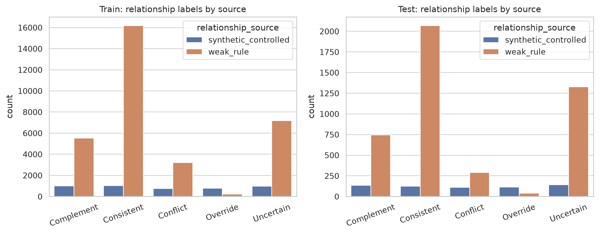
Values are mean ± std over seeds with a 95% bootstrap CI over instances (pooled over seeds) in brackets. Recall@K equals Hit@K because each instance has exactly one target.
| model | n | Hit@10 | NDCG@10 | MRR@10 | Hit@20 | NDCG@20 |
|---|---|---|---|---|---|---|
| LTP-only | 1077 | 0.053 ± 0.002 [0.045, 0.063] | 0.030 ± 0.001 [0.025, 0.037] | 0.023 ± 0.000 [0.018, 0.029] | 0.083 ± 0.002 [0.073, 0.097] | 0.037 ± 0.001 [0.032, 0.043] |
| STI-only | 1077 | 0.097 ± 0.003 [0.084, 0.109] | 0.052 ± 0.001 [0.046, 0.060] | 0.039 ± 0.002 [0.033, 0.045] | 0.136 ± 0.002 [0.121, 0.150] | 0.062 ± 0.001 [0.055, 0.069] |
| Naive fusion | 1077 | 0.092 ± 0.005 [0.078, 0.104] | 0.050 ± 0.003 [0.043, 0.057] | 0.037 ± 0.003 [0.031, 0.043] | 0.132 ± 0.000 [0.120, 0.146] | 0.060 ± 0.002 [0.053, 0.067] |
| Adaptive fusion | 1077 | 0.094 ± 0.002 [0.082, 0.106] | 0.053 ± 0.001 [0.046, 0.061] | 0.041 ± 0.000 [0.034, 0.048] | 0.136 ± 0.001 [0.124, 0.150] | 0.064 ± 0.000 [0.056, 0.072] |
| Sequential (GRU) | 1077 | 0.066 ± 0.005 [0.057, 0.077] | 0.037 ± 0.001 [0.032, 0.044] | 0.028 ± 0.002 [0.023, 0.034] | 0.094 ± 0.007 [0.083, 0.106] | 0.044 ± 0.000 [0.038, 0.051] |
| Conversation-aware | 1077 | 0.078 ± 0.001 [0.067, 0.088] | 0.043 ± 0.001 [0.036, 0.050] | 0.032 ± 0.001 [0.026, 0.039] | 0.108 ± 0.000 [0.095, 0.120] | 0.051 ± 0.001 [0.044, 0.058] |
| SASRec | 1077 | 0.058 ± 0.002 [0.051, 0.067] | 0.031 ± 0.002 [0.027, 0.037] | 0.023 ± 0.003 [0.019, 0.028] | 0.083 ± 0.005 [0.073, 0.093] | 0.037 ± 0.001 [0.032, 0.044] |
| KBRD-style | 1077 | 0.099 ± 0.002 [0.088, 0.111] | 0.052 ± 0.000 [0.045, 0.058] | 0.038 ± 0.001 [0.032, 0.043] | 0.154 ± 0.001 [0.140, 0.166] | 0.066 ± 0.000 [0.058, 0.072] |
| AIPA w/o relationship | 1077 | 0.104 ± 0.002 [0.093, 0.117] | 0.054 ± 0.002 [0.047, 0.062] | 0.039 ± 0.002 [0.033, 0.045] | 0.145 ± 0.003 [0.130, 0.158] | 0.065 ± 0.002 [0.057, 0.071] |
| AIPA w/o counterfactual | 1077 | 0.103 ± 0.002 [0.091, 0.116] | 0.053 ± 0.002 [0.046, 0.061] | 0.039 ± 0.002 [0.033, 0.044] | 0.145 ± 0.000 [0.131, 0.159] | 0.064 ± 0.001 [0.057, 0.071] |
| AIPA w/o clarification | 1077 | 0.090 ± 0.001 [0.079, 0.104] | 0.051 ± 0.000 [0.043, 0.059] | 0.039 ± 0.000 [0.033, 0.046] | 0.135 ± 0.006 [0.120, 0.150] | 0.062 ± 0.001 [0.055, 0.071] |
| AIPA w/o persistence | 1077 | 0.093 ± 0.000 [0.082, 0.107] | 0.052 ± 0.000 [0.045, 0.060] | 0.040 ± 0.001 [0.034, 0.047] | 0.137 ± 0.006 [0.122, 0.153] | 0.064 ± 0.002 [0.056, 0.072] |
| AIPA (rule policy) | 1077 | 0.088 ± 0.005 [0.077, 0.100] | 0.051 ± 0.002 [0.044, 0.058] | 0.039 ± 0.002 [0.033, 0.047] | 0.134 ± 0.003 [0.119, 0.149] | 0.062 ± 0.002 [0.055, 0.070] |
| AIPA (full) | 1077 | 0.093 ± 0.000 [0.082, 0.107] | 0.053 ± 0.000 [0.045, 0.060] | 0.040 ± 0.001 [0.034, 0.047] | 0.136 ± 0.006 [0.120, 0.152] | 0.063 ± 0.002 [0.055, 0.072] |
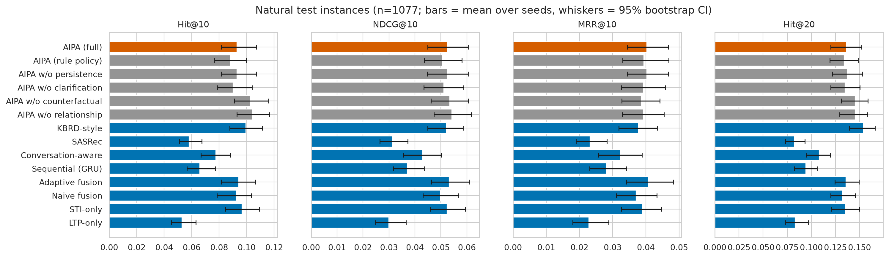
| control | n | n_samples | n_seeds | mean_diff | seed_std_diff | t_p | t_p_holm | wilcoxon_p | wilcoxon_p_holm | perm_p | perm_p_holm | cohen_d | cliffs_delta |
|---|---|---|---|---|---|---|---|---|---|---|---|---|---|
| AIPA (rule policy) | 2154 | 1077 | 2 | 0.0046 | 0.0046 | 0.3491 | 1.0000 | 0.6823 | 1.0000 | 0.4083 | 1.0000 | 0.0202 | 0.0046 |
| AIPA w/o clarification | 2154 | 1077 | 2 | 0.0028 | 0.0009 | 0.0578 | 0.4043 | 0.7969 | 1.0000 | 0.1144 | 0.8011 | 0.0409 | 0.0028 |
| AIPA w/o counterfactual | 2154 | 1077 | 2 | -0.0097 | 0.0023 | 0.0502 | 0.4014 | 0.3902 | 1.0000 | 0.0720 | 0.5757 | -0.0422 | -0.0097 |
| AIPA w/o persistence | 2154 | 1077 | 2 | 0.0000 | 0.0000 | n/a | n/a | n/a | n/a | n/a | n/a | n/a | n/a |
| AIPA w/o relationship | 2154 | 1077 | 2 | -0.0116 | 0.0023 | 0.0208 | 0.1871 | 0.3068 | 1.0000 | 0.0305 | 0.2744 | -0.0498 | -0.0116 |
| Adaptive fusion | 2154 | 1077 | 2 | -0.0014 | 0.0023 | 0.7506 | 1.0000 | 0.9012 | 1.0000 | 0.8421 | 1.0000 | -0.0069 | -0.0014 |
| Conversation-aware | 2154 | 1077 | 2 | 0.0153 | 0.0014 | 0.0051 | 0.0510 | 0.1815 | 1.0000 | 0.0080 | 0.0800 | 0.0604 | 0.0153 |
| KBRD-style | 2154 | 1077 | 2 | -0.0065 | 0.0019 | 0.2655 | 1.0000 | 0.5739 | 1.0000 | 0.3103 | 1.0000 | -0.0240 | -0.0065 |
| LTP-only | 2154 | 1077 | 2 | 0.0399 | 0.0019 | 0.0000 | 0.0000 | 0.0006 | 0.0073 | 0.0005 | 0.0065 | 0.1481 | 0.0399 |
| Naive fusion | 2154 | 1077 | 2 | 0.0005 | 0.0051 | 0.9237 | 1.0000 | 0.9673 | 1.0000 | 1.0000 | 1.0000 | 0.0021 | 0.0005 |
| SASRec | 2154 | 1077 | 2 | 0.0348 | 0.0023 | 0.0000 | 0.0000 | 0.0027 | 0.0326 | 0.0005 | 0.0065 | 0.1252 | 0.0348 |
| STI-only | 2154 | 1077 | 2 | -0.0037 | 0.0028 | 0.4726 | 1.0000 | 0.7444 | 1.0000 | 0.5327 | 1.0000 | -0.0155 | -0.0037 |
| Sequential (GRU) | 2154 | 1077 | 2 | 0.0269 | 0.0046 | 0.0000 | 0.0000 | 0.0197 | 0.2171 | 0.0005 | 0.0065 | 0.1005 | 0.0269 |
Two natural subsets are evaluated: strict = weak-rule label in Conflict/Override; broad (disagreement) = strict OR (weak-rule confidence >= 0.6 AND Jensen-Shannon divergence between the LTP and STI genre distributions >= 0.5). Both rely on weak-rule labels, not human labels.
| subset | definition | n |
|---|---|---|
| strict | weak-rule label in Conflict/Override | 62 |
| broad | Conflict/Override or (confidence >= 0.6 and JS(ltp, sti) >= 0.5) | 256 |
| broad_only | broad minus strict | 194 |
| synthetic_conflict | synthetic Conflict/Override | 78 |
| natural | all natural test instances | 1077 |
| subset | model | n | Hit@10 | NDCG@10 | MRR@10 | Hit@20 | NDCG@20 |
|---|---|---|---|---|---|---|---|
| strict | LTP-only | 62 | 0.016 ± 0.016 [0.000, 0.040] | 0.007 ± 0.007 [0.000, 0.015] | 0.004 ± 0.004 [0.000, 0.009] | 0.048 ± 0.016 [0.016, 0.089] | 0.015 ± 0.006 [0.004, 0.027] |
| strict | STI-only | 62 | 0.065 ± 0.000 [0.024, 0.113] | 0.029 ± 0.007 [0.011, 0.056] | 0.019 ± 0.009 [0.005, 0.042] | 0.145 ± 0.016 [0.097, 0.210] | 0.050 ± 0.011 [0.030, 0.081] |
| strict | Naive fusion | 62 | 0.065 ± 0.000 [0.016, 0.121] | 0.039 ± 0.001 [0.012, 0.077] | 0.030 ± 0.001 [0.008, 0.062] | 0.113 ± 0.000 [0.056, 0.170] | 0.051 ± 0.001 [0.022, 0.088] |
| strict | Adaptive fusion | 62 | 0.081 ± 0.016 [0.040, 0.129] | 0.030 ± 0.004 [0.013, 0.049] | 0.015 ± 0.001 [0.007, 0.026] | 0.097 ± 0.000 [0.048, 0.161] | 0.034 ± 0.000 [0.017, 0.056] |
| strict | Sequential (GRU) | 62 | 0.040 ± 0.008 [0.008, 0.073] | 0.016 ± 0.004 [0.003, 0.029] | 0.009 ± 0.003 [0.002, 0.017] | 0.081 ± 0.016 [0.032, 0.129] | 0.026 ± 0.006 [0.010, 0.042] |
| strict | Conversation-aware | 62 | 0.048 ± 0.000 [0.016, 0.081] | 0.024 ± 0.005 [0.006, 0.044] | 0.016 ± 0.007 [0.003, 0.035] | 0.089 ± 0.008 [0.040, 0.137] | 0.034 ± 0.003 [0.014, 0.057] |
| strict | SASRec | 62 | 0.016 ± 0.000 [0.000, 0.048] | 0.012 ± 0.005 [0.000, 0.030] | 0.010 ± 0.006 [0.000, 0.026] | 0.032 ± 0.000 [0.008, 0.073] | 0.016 ± 0.004 [0.002, 0.035] |
| strict | KBRD-style | 62 | 0.121 ± 0.008 [0.073, 0.177] | 0.050 ± 0.009 [0.028, 0.076] | 0.029 ± 0.009 [0.014, 0.050] | 0.218 ± 0.008 [0.153, 0.291] | 0.075 ± 0.005 [0.053, 0.107] |
| strict | AIPA w/o relationship | 62 | 0.097 ± 0.032 [0.048, 0.153] | 0.047 ± 0.009 [0.022, 0.080] | 0.032 ± 0.003 [0.012, 0.061] | 0.153 ± 0.024 [0.097, 0.226] | 0.061 ± 0.007 [0.035, 0.097] |
| strict | AIPA w/o counterfactual | 62 | 0.097 ± 0.032 [0.048, 0.153] | 0.047 ± 0.009 [0.022, 0.080] | 0.032 ± 0.003 [0.012, 0.061] | 0.145 ± 0.032 [0.089, 0.210] | 0.059 ± 0.009 [0.031, 0.094] |
| strict | AIPA w/o clarification | 62 | 0.081 ± 0.000 [0.032, 0.137] | 0.047 ± 0.010 [0.019, 0.088] | 0.037 ± 0.014 [0.013, 0.076] | 0.129 ± 0.016 [0.073, 0.202] | 0.059 ± 0.014 [0.032, 0.101] |
| strict | AIPA w/o persistence | 62 | 0.089 ± 0.008 [0.040, 0.145] | 0.052 ± 0.011 [0.024, 0.092] | 0.041 ± 0.017 [0.016, 0.077] | 0.129 ± 0.016 [0.073, 0.202] | 0.062 ± 0.017 [0.034, 0.106] |
| strict | AIPA (rule policy) | 62 | 0.081 ± 0.000 [0.032, 0.129] | 0.054 ± 0.006 [0.021, 0.099] | 0.046 ± 0.008 [0.017, 0.084] | 0.137 ± 0.008 [0.081, 0.210] | 0.068 ± 0.004 [0.035, 0.110] |
| strict | AIPA (full) | 62 | 0.089 ± 0.008 [0.040, 0.145] | 0.052 ± 0.011 [0.024, 0.092] | 0.041 ± 0.017 [0.016, 0.077] | 0.129 ± 0.016 [0.073, 0.202] | 0.062 ± 0.017 [0.034, 0.106] |
| broad | LTP-only | 256 | 0.027 ± 0.004 [0.014, 0.043] | 0.015 ± 0.003 [0.008, 0.025] | 0.012 ± 0.003 [0.006, 0.020] | 0.055 ± 0.004 [0.035, 0.078] | 0.022 ± 0.001 [0.013, 0.033] |
| broad | STI-only | 256 | 0.092 ± 0.010 [0.068, 0.119] | 0.048 ± 0.009 [0.034, 0.065] | 0.034 ± 0.009 [0.023, 0.051] | 0.139 ± 0.006 [0.111, 0.168] | 0.059 ± 0.009 [0.046, 0.077] |
| broad | Naive fusion | 256 | 0.076 ± 0.021 [0.055, 0.098] | 0.041 ± 0.016 [0.029, 0.053] | 0.030 ± 0.014 [0.019, 0.041] | 0.119 ± 0.014 [0.092, 0.152] | 0.052 ± 0.014 [0.039, 0.066] |
| broad | Adaptive fusion | 256 | 0.090 ± 0.012 [0.064, 0.117] | 0.046 ± 0.008 [0.034, 0.063] | 0.033 ± 0.006 [0.024, 0.046] | 0.121 ± 0.008 [0.094, 0.150] | 0.054 ± 0.006 [0.041, 0.070] |
| broad | Sequential (GRU) | 256 | 0.045 ± 0.006 [0.029, 0.066] | 0.022 ± 0.004 [0.013, 0.032] | 0.015 ± 0.007 [0.008, 0.023] | 0.068 ± 0.006 [0.047, 0.094] | 0.028 ± 0.004 [0.019, 0.039] |
| broad | Conversation-aware | 256 | 0.062 ± 0.012 [0.043, 0.080] | 0.030 ± 0.009 [0.019, 0.041] | 0.020 ± 0.008 [0.012, 0.029] | 0.104 ± 0.014 [0.078, 0.127] | 0.040 ± 0.010 [0.029, 0.051] |
| broad | SASRec | 256 | 0.043 ± 0.004 [0.027, 0.064] | 0.024 ± 0.004 [0.014, 0.036] | 0.018 ± 0.003 [0.008, 0.027] | 0.059 ± 0.004 [0.039, 0.082] | 0.028 ± 0.002 [0.017, 0.040] |
| broad | KBRD-style | 256 | 0.115 ± 0.014 [0.092, 0.145] | 0.057 ± 0.006 [0.044, 0.071] | 0.039 ± 0.004 [0.028, 0.051] | 0.178 ± 0.006 [0.146, 0.209] | 0.072 ± 0.004 [0.058, 0.087] |
| broad | AIPA w/o relationship | 256 | 0.109 ± 0.004 [0.086, 0.137] | 0.057 ± 0.006 [0.042, 0.071] | 0.040 ± 0.008 [0.029, 0.054] | 0.154 ± 0.006 [0.125, 0.186] | 0.068 ± 0.005 [0.053, 0.083] |
| broad | AIPA w/o counterfactual | 256 | 0.105 ± 0.004 [0.076, 0.133] | 0.054 ± 0.004 [0.039, 0.069] | 0.039 ± 0.006 [0.027, 0.052] | 0.150 ± 0.002 [0.123, 0.182] | 0.066 ± 0.006 [0.051, 0.080] |
| broad | AIPA w/o clarification | 256 | 0.088 ± 0.014 [0.059, 0.117] | 0.047 ± 0.013 [0.030, 0.063] | 0.034 ± 0.012 [0.022, 0.047] | 0.141 ± 0.012 [0.109, 0.174] | 0.060 ± 0.012 [0.046, 0.076] |
| broad | AIPA w/o persistence | 256 | 0.090 ± 0.008 [0.062, 0.117] | 0.051 ± 0.012 [0.033, 0.067] | 0.039 ± 0.014 [0.026, 0.053] | 0.141 ± 0.012 [0.109, 0.174] | 0.063 ± 0.013 [0.048, 0.079] |
| broad | AIPA (rule policy) | 256 | 0.088 ± 0.002 [0.066, 0.113] | 0.047 ± 0.003 [0.033, 0.061] | 0.035 ± 0.004 [0.023, 0.047] | 0.127 ± 0.014 [0.102, 0.158] | 0.057 ± 0.006 [0.042, 0.073] |
| broad | AIPA (full) | 256 | 0.090 ± 0.008 [0.062, 0.117] | 0.051 ± 0.012 [0.033, 0.067] | 0.039 ± 0.014 [0.026, 0.053] | 0.139 ± 0.010 [0.109, 0.170] | 0.063 ± 0.013 [0.048, 0.079] |
| model | n | Hit@10 | NDCG@10 | MRR@10 | Hit@20 | NDCG@20 |
|---|---|---|---|---|---|---|
| LTP-only | 821 | 0.061 ± 0.004 [0.050, 0.072] | 0.034 ± 0.002 [0.029, 0.042] | 0.026 ± 0.002 [0.021, 0.034] | 0.092 ± 0.002 [0.077, 0.105] | 0.042 ± 0.002 [0.037, 0.051] |
| STI-only | 821 | 0.098 ± 0.007 [0.085, 0.112] | 0.054 ± 0.002 [0.045, 0.061] | 0.040 ± 0.000 [0.033, 0.047] | 0.135 ± 0.004 [0.118, 0.151] | 0.063 ± 0.001 [0.054, 0.070] |
| Naive fusion | 821 | 0.097 ± 0.000 [0.082, 0.110] | 0.053 ± 0.001 [0.044, 0.061] | 0.039 ± 0.001 [0.031, 0.047] | 0.136 ± 0.004 [0.119, 0.153] | 0.062 ± 0.002 [0.053, 0.070] |
| Adaptive fusion | 821 | 0.096 ± 0.001 [0.082, 0.108] | 0.055 ± 0.002 [0.048, 0.063] | 0.043 ± 0.002 [0.036, 0.051] | 0.141 ± 0.001 [0.125, 0.157] | 0.067 ± 0.001 [0.058, 0.075] |
| Sequential (GRU) | 821 | 0.072 ± 0.004 [0.061, 0.084] | 0.042 ± 0.000 [0.034, 0.050] | 0.032 ± 0.001 [0.026, 0.039] | 0.102 ± 0.007 [0.086, 0.118] | 0.049 ± 0.001 [0.041, 0.057] |
| Conversation-aware | 821 | 0.082 ± 0.002 [0.070, 0.096] | 0.047 ± 0.001 [0.040, 0.055] | 0.036 ± 0.001 [0.030, 0.045] | 0.110 ± 0.004 [0.096, 0.126] | 0.054 ± 0.002 [0.046, 0.063] |
| SASRec | 821 | 0.063 ± 0.002 [0.052, 0.075] | 0.034 ± 0.003 [0.027, 0.040] | 0.025 ± 0.005 [0.020, 0.030] | 0.090 ± 0.007 [0.076, 0.103] | 0.041 ± 0.002 [0.034, 0.047] |
| KBRD-style | 821 | 0.094 ± 0.007 [0.081, 0.110] | 0.051 ± 0.002 [0.044, 0.058] | 0.037 ± 0.000 [0.032, 0.044] | 0.147 ± 0.003 [0.130, 0.164] | 0.064 ± 0.001 [0.056, 0.072] |
| AIPA w/o relationship | 821 | 0.103 ± 0.002 [0.090, 0.116] | 0.054 ± 0.004 [0.046, 0.062] | 0.039 ± 0.005 [0.032, 0.046] | 0.143 ± 0.002 [0.128, 0.160] | 0.063 ± 0.004 [0.056, 0.073] |
| AIPA w/o counterfactual | 821 | 0.102 ± 0.002 [0.090, 0.115] | 0.053 ± 0.004 [0.046, 0.061] | 0.039 ± 0.004 [0.032, 0.045] | 0.144 ± 0.001 [0.129, 0.159] | 0.064 ± 0.004 [0.056, 0.072] |
| AIPA w/o clarification | 821 | 0.091 ± 0.003 [0.079, 0.104] | 0.052 ± 0.004 [0.044, 0.061] | 0.041 ± 0.004 [0.032, 0.048] | 0.133 ± 0.004 [0.119, 0.149] | 0.063 ± 0.002 [0.055, 0.072] |
| AIPA w/o persistence | 821 | 0.094 ± 0.002 [0.082, 0.107] | 0.053 ± 0.003 [0.045, 0.062] | 0.041 ± 0.004 [0.032, 0.048] | 0.136 ± 0.005 [0.121, 0.152] | 0.064 ± 0.002 [0.056, 0.073] |
| AIPA (rule policy) | 821 | 0.088 ± 0.007 [0.076, 0.102] | 0.052 ± 0.004 [0.044, 0.061] | 0.041 ± 0.003 [0.033, 0.049] | 0.136 ± 0.009 [0.121, 0.152] | 0.064 ± 0.005 [0.055, 0.072] |
| AIPA (full) | 821 | 0.094 ± 0.002 [0.082, 0.107] | 0.053 ± 0.003 [0.045, 0.062] | 0.041 ± 0.004 [0.032, 0.048] | 0.136 ± 0.004 [0.120, 0.152] | 0.064 ± 0.002 [0.055, 0.073] |
Targets on this subset are sampled items that match the injected intent; the numbers measure whether a system follows a clearly expressed short-term intent, not accuracy on human recommendations.
| model | n | Hit@10 | NDCG@10 | MRR@10 | Hit@20 | NDCG@20 |
|---|---|---|---|---|---|---|
| LTP-only | 78 | 0.032 ± 0.006 [0.006, 0.064] | 0.012 ± 0.001 [0.002, 0.024] | 0.006 ± 0.000 [0.001, 0.012] | 0.045 ± 0.006 [0.013, 0.083] | 0.015 ± 0.001 [0.004, 0.027] |
| STI-only | 78 | 0.237 ± 0.019 [0.167, 0.295] | 0.112 ± 0.023 [0.077, 0.148] | 0.075 ± 0.024 [0.046, 0.103] | 0.391 ± 0.006 [0.308, 0.462] | 0.151 ± 0.019 [0.114, 0.185] |
| Naive fusion | 78 | 0.250 ± 0.006 [0.186, 0.321] | 0.117 ± 0.010 [0.084, 0.151] | 0.077 ± 0.015 [0.048, 0.107] | 0.385 ± 0.026 [0.308, 0.455] | 0.150 ± 0.018 [0.116, 0.187] |
| Adaptive fusion | 78 | 0.250 ± 0.019 [0.179, 0.321] | 0.117 ± 0.010 [0.081, 0.151] | 0.078 ± 0.018 [0.049, 0.105] | 0.385 ± 0.026 [0.295, 0.462] | 0.151 ± 0.022 [0.114, 0.184] |
| Sequential (GRU) | 78 | 0.026 ± 0.013 [0.006, 0.051] | 0.012 ± 0.004 [0.002, 0.024] | 0.007 ± 0.001 [0.001, 0.016] | 0.045 ± 0.006 [0.013, 0.077] | 0.017 ± 0.002 [0.005, 0.028] |
| Conversation-aware | 78 | 0.109 ± 0.019 [0.064, 0.154] | 0.052 ± 0.010 [0.029, 0.079] | 0.035 ± 0.007 [0.016, 0.059] | 0.218 ± 0.064 [0.154, 0.276] | 0.079 ± 0.021 [0.055, 0.105] |
| SASRec | 78 | 0.051 ± 0.000 [0.019, 0.083] | 0.018 ± 0.003 [0.006, 0.032] | 0.009 ± 0.003 [0.002, 0.017] | 0.090 ± 0.013 [0.045, 0.135] | 0.028 ± 0.006 [0.012, 0.043] |
| KBRD-style | 78 | 0.263 ± 0.019 [0.199, 0.327] | 0.121 ± 0.000 [0.090, 0.161] | 0.079 ± 0.005 [0.053, 0.112] | 0.410 ± 0.000 [0.327, 0.494] | 0.158 ± 0.004 [0.125, 0.196] |
| AIPA w/o relationship | 78 | 0.218 ± 0.013 [0.154, 0.282] | 0.107 ± 0.007 [0.074, 0.139] | 0.073 ± 0.005 [0.048, 0.100] | 0.410 ± 0.000 [0.327, 0.494] | 0.155 ± 0.003 [0.120, 0.186] |
| AIPA w/o counterfactual | 78 | 0.224 ± 0.006 [0.160, 0.288] | 0.108 ± 0.005 [0.076, 0.141] | 0.073 ± 0.004 [0.047, 0.100] | 0.410 ± 0.000 [0.327, 0.494] | 0.156 ± 0.003 [0.120, 0.186] |
| AIPA w/o clarification | 78 | 0.205 ± 0.013 [0.141, 0.263] | 0.095 ± 0.004 [0.065, 0.121] | 0.061 ± 0.002 [0.038, 0.082] | 0.397 ± 0.013 [0.314, 0.474] | 0.143 ± 0.001 [0.108, 0.170] |
| AIPA w/o persistence | 78 | 0.212 ± 0.006 [0.141, 0.269] | 0.096 ± 0.001 [0.067, 0.125] | 0.061 ± 0.000 [0.037, 0.083] | 0.391 ± 0.006 [0.295, 0.475] | 0.142 ± 0.001 [0.106, 0.170] |
| AIPA (rule policy) | 78 | 0.212 ± 0.019 [0.154, 0.276] | 0.094 ± 0.015 [0.064, 0.121] | 0.059 ± 0.013 [0.037, 0.077] | 0.378 ± 0.019 [0.308, 0.462] | 0.136 ± 0.014 [0.105, 0.167] |
| AIPA (full) | 78 | 0.212 ± 0.006 [0.141, 0.269] | 0.096 ± 0.001 [0.067, 0.125] | 0.061 ± 0.000 [0.037, 0.083] | 0.391 ± 0.006 [0.295, 0.475] | 0.142 ± 0.001 [0.106, 0.170] |
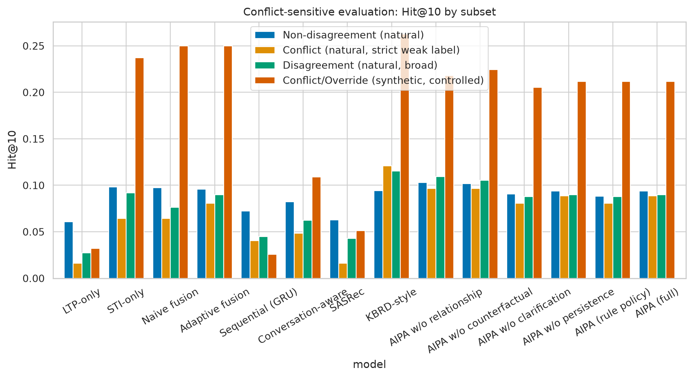
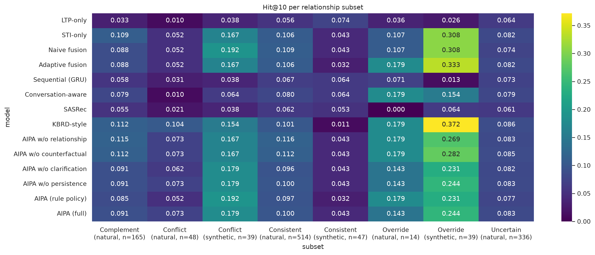
| intensity | model | n | seeds | Hit@10_mean | Hit@10_std | NDCG@10_mean | NDCG@10_std |
|---|---|---|---|---|---|---|---|
| 1 | LTP-only | 27 | 2 | 0.000 | 0.000 | 0.000 | 0.000 |
| 1 | STI-only | 27 | 2 | 0.296 | 0.074 | 0.138 | 0.054 |
| 1 | Naive fusion | 27 | 2 | 0.296 | 0.037 | 0.116 | 0.026 |
| 1 | Adaptive fusion | 27 | 2 | 0.278 | 0.093 | 0.119 | 0.024 |
| 1 | Sequential (GRU) | 27 | 2 | 0.000 | 0.000 | 0.000 | 0.000 |
| 1 | Conversation-aware | 27 | 2 | 0.148 | 0.037 | 0.081 | 0.033 |
| 1 | SASRec | 27 | 2 | 0.056 | 0.019 | 0.018 | 0.004 |
| 1 | KBRD-style | 27 | 2 | 0.426 | 0.093 | 0.186 | 0.034 |
| 1 | AIPA w/o relationship | 27 | 2 | 0.185 | 0.074 | 0.104 | 0.039 |
| 1 | AIPA w/o counterfactual | 27 | 2 | 0.185 | 0.074 | 0.102 | 0.041 |
| 1 | AIPA w/o clarification | 27 | 2 | 0.241 | 0.093 | 0.111 | 0.036 |
| 1 | AIPA w/o persistence | 27 | 2 | 0.241 | 0.093 | 0.111 | 0.036 |
| 1 | AIPA (rule policy) | 27 | 2 | 0.259 | 0.074 | 0.114 | 0.034 |
| 1 | AIPA (full) | 27 | 2 | 0.241 | 0.093 | 0.111 | 0.036 |
| 2 | LTP-only | 21 | 2 | 0.048 | 0.000 | 0.018 | 0.003 |
| 2 | STI-only | 21 | 2 | 0.214 | 0.071 | 0.108 | 0.013 |
| 2 | Naive fusion | 21 | 2 | 0.214 | 0.071 | 0.117 | 0.008 |
| 2 | Adaptive fusion | 21 | 2 | 0.214 | 0.071 | 0.099 | 0.046 |
| 2 | Sequential (GRU) | 21 | 2 | 0.024 | 0.024 | 0.008 | 0.008 |
| 2 | Conversation-aware | 21 | 2 | 0.119 | 0.071 | 0.057 | 0.009 |
| 2 | SASRec | 21 | 2 | 0.000 | 0.000 | 0.000 | 0.000 |
| 2 | KBRD-style | 21 | 2 | 0.167 | 0.071 | 0.102 | 0.058 |
| 2 | AIPA w/o relationship | 21 | 2 | 0.214 | 0.119 | 0.105 | 0.039 |
| 2 | AIPA w/o counterfactual | 21 | 2 | 0.238 | 0.143 | 0.113 | 0.049 |
| 2 | AIPA w/o clarification | 21 | 2 | 0.190 | 0.143 | 0.094 | 0.046 |
| 2 | AIPA w/o persistence | 21 | 2 | 0.238 | 0.143 | 0.106 | 0.044 |
| 2 | AIPA (rule policy) | 21 | 2 | 0.190 | 0.048 | 0.092 | 0.005 |
| 2 | AIPA (full) | 21 | 2 | 0.238 | 0.143 | 0.106 | 0.044 |
| 3 | LTP-only | 30 | 2 | 0.050 | 0.017 | 0.019 | 0.005 |
| 3 | STI-only | 30 | 2 | 0.200 | 0.033 | 0.093 | 0.021 |
| 3 | Naive fusion | 30 | 2 | 0.233 | 0.000 | 0.117 | 0.002 |
| 3 | Adaptive fusion | 30 | 2 | 0.250 | 0.017 | 0.127 | 0.015 |
| 3 | Sequential (GRU) | 30 | 2 | 0.050 | 0.017 | 0.025 | 0.004 |
| 3 | Conversation-aware | 30 | 2 | 0.067 | 0.033 | 0.021 | 0.011 |
| 3 | SASRec | 30 | 2 | 0.083 | 0.017 | 0.031 | 0.011 |
| 3 | KBRD-style | 30 | 2 | 0.183 | 0.017 | 0.077 | 0.010 |
| 3 | AIPA w/o relationship | 30 | 2 | 0.250 | 0.050 | 0.110 | 0.010 |
| 3 | AIPA w/o counterfactual | 30 | 2 | 0.250 | 0.050 | 0.111 | 0.009 |
| 3 | AIPA w/o clarification | 30 | 2 | 0.183 | 0.017 | 0.081 | 0.011 |
| 3 | AIPA w/o persistence | 30 | 2 | 0.167 | 0.000 | 0.076 | 0.005 |
| 3 | AIPA (rule policy) | 30 | 2 | 0.183 | 0.017 | 0.078 | 0.011 |
| 3 | AIPA (full) | 30 | 2 | 0.167 | 0.000 | 0.076 | 0.005 |
| subset | control | n | n_samples | n_seeds | mean_diff | seed_std_diff | t_p | t_p_holm | wilcoxon_p | wilcoxon_p_holm | perm_p | perm_p_holm | cohen_d | cliffs_delta |
|---|---|---|---|---|---|---|---|---|---|---|---|---|---|---|
| conflict_natural_strict | AIPA (rule policy) | 124 | 62 | 2 | 0.0081 | 0.0081 | 0.7071 | 1.0000 | 0.8654 | 1.0000 | 1.0000 | 1.0000 | 0.0338 | 0.0081 |
| conflict_natural_strict | AIPA w/o clarification | 124 | 62 | 2 | 0.0081 | 0.0081 | 0.3193 | 1.0000 | 0.8591 | 1.0000 | 1.0000 | 1.0000 | 0.0898 | 0.0081 |
| conflict_natural_strict | AIPA w/o counterfactual | 124 | 62 | 2 | -0.0081 | 0.0242 | 0.7071 | 1.0000 | 0.8654 | 1.0000 | 1.0000 | 1.0000 | -0.0338 | -0.0081 |
| conflict_natural_strict | AIPA w/o persistence | 124 | 62 | 2 | 0.0000 | 0.0000 | n/a | n/a | n/a | n/a | n/a | n/a | n/a | n/a |
| conflict_natural_strict | AIPA w/o relationship | 124 | 62 | 2 | -0.0081 | 0.0242 | 0.7071 | 1.0000 | 0.8654 | 1.0000 | 1.0000 | 1.0000 | -0.0338 | -0.0081 |
| conflict_natural_strict | Adaptive fusion | 124 | 62 | 2 | 0.0081 | 0.0242 | 0.6565 | 1.0000 | 0.8634 | 1.0000 | 1.0000 | 1.0000 | 0.0400 | 0.0081 |
| conflict_natural_strict | Conversation-aware | 124 | 62 | 2 | 0.0403 | 0.0081 | 0.1322 | 1.0000 | 0.4106 | 1.0000 | 0.2149 | 1.0000 | 0.1361 | 0.0403 |
| conflict_natural_strict | KBRD-style | 124 | 62 | 2 | -0.0323 | 0.0000 | 0.2498 | 1.0000 | 0.5134 | 1.0000 | 0.3908 | 1.0000 | -0.1038 | -0.0323 |
| conflict_natural_strict | LTP-only | 124 | 62 | 2 | 0.0726 | 0.0081 | 0.0024 | 0.0309 | 0.1329 | 1.0000 | 0.0035 | 0.0455 | 0.2786 | 0.0726 |
| conflict_natural_strict | Naive fusion | 124 | 62 | 2 | 0.0242 | 0.0081 | 0.1808 | 1.0000 | 0.6058 | 1.0000 | 0.3758 | 1.0000 | 0.1209 | 0.0242 |
| conflict_natural_strict | SASRec | 124 | 62 | 2 | 0.0726 | 0.0081 | 0.0062 | 0.0741 | 0.1386 | 1.0000 | 0.0105 | 0.1259 | 0.2502 | 0.0726 |
| conflict_natural_strict | STI-only | 124 | 62 | 2 | 0.0242 | 0.0081 | 0.3678 | 1.0000 | 0.6215 | 1.0000 | 0.5467 | 1.0000 | 0.0812 | 0.0242 |
| conflict_natural_strict | Sequential (GRU) | 124 | 62 | 2 | 0.0484 | 0.0000 | 0.1091 | 1.0000 | 0.3338 | 1.0000 | 0.1669 | 1.0000 | 0.1449 | 0.0484 |
| conflict_natural_broad | AIPA (rule policy) | 512 | 256 | 2 | 0.0020 | 0.0059 | 0.8577 | 1.0000 | 0.9336 | 1.0000 | 1.0000 | 1.0000 | 0.0079 | 0.0020 |
| conflict_natural_broad | AIPA w/o clarification | 512 | 256 | 2 | 0.0020 | 0.0059 | 0.5642 | 1.0000 | 0.9300 | 1.0000 | 1.0000 | 1.0000 | 0.0255 | 0.0020 |
| conflict_natural_broad | AIPA w/o counterfactual | 512 | 256 | 2 | -0.0156 | 0.0117 | 0.1443 | 1.0000 | 0.5044 | 1.0000 | 0.2029 | 1.0000 | -0.0646 | -0.0156 |
| conflict_natural_broad | AIPA w/o persistence | 512 | 256 | 2 | 0.0000 | 0.0000 | n/a | n/a | n/a | n/a | n/a | n/a | n/a | n/a |
| conflict_natural_broad | AIPA w/o relationship | 512 | 256 | 2 | -0.0195 | 0.0117 | 0.0678 | 0.5427 | 0.4040 | 1.0000 | 0.0860 | 0.6877 | -0.0809 | -0.0195 |
| conflict_natural_broad | Adaptive fusion | 512 | 256 | 2 | 0.0000 | 0.0039 | 1.0000 | 1.0000 | 1.0000 | 1.0000 | 1.0000 | 1.0000 | 0.0000 | 0.0000 |
| conflict_natural_broad | Conversation-aware | 512 | 256 | 2 | 0.0273 | 0.0039 | 0.0195 | 0.1948 | 0.2478 | 1.0000 | 0.0355 | 0.3548 | 0.1036 | 0.0273 |
| conflict_natural_broad | KBRD-style | 512 | 256 | 2 | -0.0254 | 0.0059 | 0.0324 | 0.2920 | 0.2840 | 1.0000 | 0.0390 | 0.3548 | -0.0948 | -0.0254 |
| conflict_natural_broad | LTP-only | 512 | 256 | 2 | 0.0625 | 0.0117 | 0.0000 | 0.0000 | 0.0092 | 0.1196 | 0.0005 | 0.0065 | 0.2180 | 0.0625 |
| conflict_natural_broad | Naive fusion | 512 | 256 | 2 | 0.0137 | 0.0137 | 0.2371 | 1.0000 | 0.5626 | 1.0000 | 0.2999 | 1.0000 | 0.0523 | 0.0137 |
| conflict_natural_broad | SASRec | 512 | 256 | 2 | 0.0469 | 0.0039 | 0.0005 | 0.0055 | 0.0524 | 0.6291 | 0.0005 | 0.0065 | 0.1548 | 0.0469 |
| conflict_natural_broad | STI-only | 512 | 256 | 2 | -0.0020 | 0.0020 | 0.8730 | 1.0000 | 0.9346 | 1.0000 | 1.0000 | 1.0000 | -0.0071 | -0.0020 |
| conflict_natural_broad | Sequential (GRU) | 512 | 256 | 2 | 0.0449 | 0.0137 | 0.0003 | 0.0037 | 0.0599 | 0.6584 | 0.0010 | 0.0110 | 0.1606 | 0.0449 |
| conflict_synthetic | AIPA (rule policy) | 156 | 78 | 2 | 0.0000 | 0.0256 | 1.0000 | 1.0000 | 1.0000 | 1.0000 | 1.0000 | 1.0000 | 0.0000 | 0.0000 |
| conflict_synthetic | AIPA w/o clarification | 156 | 78 | 2 | 0.0064 | 0.0064 | 0.5654 | 1.0000 | 0.8755 | 1.0000 | 1.0000 | 1.0000 | 0.0461 | 0.0064 |
| conflict_synthetic | AIPA w/o counterfactual | 156 | 78 | 2 | -0.0128 | 0.0128 | 0.6845 | 1.0000 | 0.7814 | 1.0000 | 0.8331 | 1.0000 | -0.0326 | -0.0128 |
| conflict_synthetic | AIPA w/o persistence | 156 | 78 | 2 | 0.0000 | 0.0000 | n/a | n/a | n/a | n/a | n/a | n/a | n/a | n/a |
| conflict_synthetic | AIPA w/o relationship | 156 | 78 | 2 | -0.0064 | 0.0192 | 0.8356 | 1.0000 | 0.8891 | 1.0000 | 1.0000 | 1.0000 | -0.0166 | -0.0064 |
| conflict_synthetic | Adaptive fusion | 156 | 78 | 2 | -0.0385 | 0.0256 | 0.2582 | 1.0000 | 0.4152 | 1.0000 | 0.3418 | 1.0000 | -0.0909 | -0.0385 |
| conflict_synthetic | Conversation-aware | 156 | 78 | 2 | 0.1026 | 0.0128 | 0.0015 | 0.0150 | 0.0281 | 0.2809 | 0.0035 | 0.0350 | 0.2587 | 0.1026 |
| conflict_synthetic | KBRD-style | 156 | 78 | 2 | -0.0513 | 0.0256 | 0.1953 | 1.0000 | 0.3021 | 1.0000 | 0.2464 | 1.0000 | -0.1041 | -0.0513 |
| conflict_synthetic | LTP-only | 156 | 78 | 2 | 0.1795 | 0.0000 | 0.0000 | 0.0000 | 0.0002 | 0.0020 | 0.0005 | 0.0065 | 0.4471 | 0.1795 |
| conflict_synthetic | Naive fusion | 156 | 78 | 2 | -0.0385 | 0.0000 | 0.2582 | 1.0000 | 0.4152 | 1.0000 | 0.3423 | 1.0000 | -0.0909 | -0.0385 |
| conflict_synthetic | SASRec | 156 | 78 | 2 | 0.1603 | 0.0064 | 0.0000 | 0.0000 | 0.0008 | 0.0091 | 0.0005 | 0.0065 | 0.3840 | 0.1603 |
| conflict_synthetic | STI-only | 156 | 78 | 2 | -0.0256 | 0.0256 | 0.4160 | 1.0000 | 0.5789 | 1.0000 | 0.5387 | 1.0000 | -0.0653 | -0.0256 |
| conflict_synthetic | Sequential (GRU) | 156 | 78 | 2 | 0.1859 | 0.0064 | 0.0000 | 0.0000 | 0.0001 | 0.0014 | 0.0005 | 0.0065 | 0.4573 | 0.1859 |
| model | subset | accuracy | macro_precision | macro_recall | macro_f1 | weighted_f1 | F1_Complement | F1_Consistent | F1_Conflict | F1_Override | F1_Uncertain |
|---|---|---|---|---|---|---|---|---|---|---|---|
| AIPA (full) | all | 0.768 | 0.690 | 0.699 | 0.687 | 0.763 | 0.376 | 0.808 | 0.503 | 0.808 | 0.939 |
| AIPA (full) | natural | 0.745 | 0.554 | 0.572 | 0.551 | 0.745 | 0.377 | 0.793 | 0.237 | 0.410 | 0.939 |
| AIPA (full) | synthetic | 0.972 | 0.589 | 0.582 | 0.585 | 0.976 | 0.000 | 0.979 | 0.960 | 0.987 | 0.000 |
| AIPA (rule policy) | all | 0.766 | 0.690 | 0.676 | 0.669 | 0.751 | 0.299 | 0.813 | 0.490 | 0.820 | 0.925 |
| AIPA (rule policy) | natural | 0.745 | 0.551 | 0.553 | 0.533 | 0.732 | 0.301 | 0.800 | 0.219 | 0.419 | 0.926 |
| AIPA (rule policy) | synthetic | 0.944 | 0.584 | 0.564 | 0.572 | 0.954 | 0.000 | 0.959 | 0.901 | 1.000 | 0.000 |
| AIPA w/o clarification | all | 0.767 | 0.687 | 0.700 | 0.685 | 0.760 | 0.341 | 0.807 | 0.503 | 0.831 | 0.941 |
| AIPA w/o clarification | natural | 0.743 | 0.561 | 0.589 | 0.561 | 0.741 | 0.341 | 0.792 | 0.242 | 0.489 | 0.942 |
| AIPA w/o clarification | synthetic | 0.972 | 0.589 | 0.582 | 0.585 | 0.976 | 0.000 | 0.979 | 0.960 | 0.987 | 0.000 |
| AIPA w/o counterfactual | all | 0.772 | 0.692 | 0.688 | 0.683 | 0.762 | 0.336 | 0.819 | 0.511 | 0.820 | 0.931 |
| AIPA w/o counterfactual | natural | 0.749 | 0.545 | 0.550 | 0.538 | 0.741 | 0.338 | 0.805 | 0.223 | 0.392 | 0.932 |
| AIPA w/o counterfactual | synthetic | 0.968 | 0.592 | 0.579 | 0.585 | 0.975 | 0.000 | 0.979 | 0.946 | 1.000 | 0.000 |
| AIPA w/o persistence | all | 0.769 | 0.691 | 0.700 | 0.687 | 0.764 | 0.376 | 0.809 | 0.502 | 0.808 | 0.941 |
| AIPA w/o persistence | natural | 0.746 | 0.555 | 0.572 | 0.552 | 0.746 | 0.378 | 0.793 | 0.237 | 0.410 | 0.941 |
| AIPA w/o persistence | synthetic | 0.972 | 0.589 | 0.582 | 0.585 | 0.976 | 0.000 | 0.979 | 0.960 | 0.987 | 0.000 |
| AIPA w/o relationship | all | 0.775 | 0.697 | 0.690 | 0.686 | 0.763 | 0.345 | 0.819 | 0.508 | 0.823 | 0.933 |
| AIPA w/o relationship | natural | 0.752 | 0.551 | 0.552 | 0.541 | 0.744 | 0.347 | 0.805 | 0.221 | 0.399 | 0.934 |
| AIPA w/o relationship | synthetic | 0.968 | 0.592 | 0.579 | 0.585 | 0.975 | 0.000 | 0.979 | 0.946 | 1.000 | 0.000 |
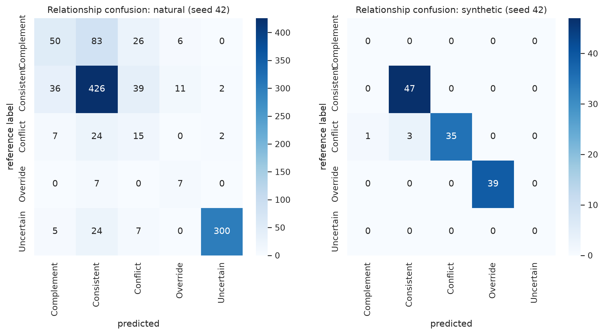
| model | subset | arbitration_accuracy | conflict_resolution_accuracy | conflict_arbitration_f1 | override_success_rate | clarification_rate | clarification_precision | clarification_efficiency | unnecessary_clarification_rate | wrong_override_rate | n | n_conflict | n_asked |
|---|---|---|---|---|---|---|---|---|---|---|---|---|---|
| AIPA (full) | all | 0.889 | 0.604 | 0.376 | 0.251 | 0.181 | 0.991 | 0.607 | 0.002 | 0.012 | 1202.000 | 140.000 | 217.000 |
| AIPA (full) | natural | 0.883 | 0.226 | 0.184 | 0.312 | 0.201 | 0.991 | 0.607 | 0.002 | 0.013 | 1077.000 | 62.000 | 217.000 |
| AIPA (full) | synthetic | 0.940 | 0.904 | 0.475 | 0.244 | 0.000 | n/a | n/a | 0.000 | 0.000 | 125.000 | 78.000 | 0.000 |
| AIPA (rule policy) | all | 0.831 | 0.614 | 0.254 | 0.232 | 0.260 | 0.723 | 0.636 | 0.073 | 0.019 | 1202.000 | 140.000 | 312.500 |
| AIPA (rule policy) | natural | 0.818 | 0.242 | 0.128 | 0.236 | 0.289 | 0.726 | 0.636 | 0.080 | 0.021 | 1077.000 | 62.000 | 311.000 |
| AIPA (rule policy) | synthetic | 0.944 | 0.910 | 0.318 | 0.231 | 0.012 | 0.000 | n/a | 0.012 | 0.000 | 125.000 | 78.000 | 1.500 |
| AIPA w/o clarification | all | 0.713 | 0.579 | 0.366 | 0.250 | 0.000 | n/a | 0.000 | 0.000 | 0.012 | 1202.000 | 140.000 | 0.000 |
| AIPA w/o clarification | natural | 0.687 | 0.185 | 0.155 | 0.362 | 0.000 | n/a | 0.000 | 0.000 | 0.014 | 1077.000 | 62.000 | 0.000 |
| AIPA w/o clarification | synthetic | 0.932 | 0.891 | 0.471 | 0.237 | 0.000 | n/a | n/a | 0.000 | 0.000 | 125.000 | 78.000 | 0.000 |
| AIPA w/o counterfactual | all | 0.894 | 0.607 | 0.378 | 0.278 | 0.177 | 1.000 | 0.600 | 0.000 | 0.010 | 1202.000 | 140.000 | 212.500 |
| AIPA w/o counterfactual | natural | 0.887 | 0.218 | 0.179 | 0.250 | 0.197 | 1.000 | 0.600 | 0.000 | 0.011 | 1077.000 | 62.000 | 212.500 |
| AIPA w/o counterfactual | synthetic | 0.948 | 0.917 | 0.478 | 0.282 | 0.000 | n/a | n/a | 0.000 | 0.000 | 125.000 | 78.000 | 0.000 |
| AIPA w/o persistence | all | 0.887 | 0.604 | 0.376 | 0.251 | 0.181 | 0.991 | 0.607 | 0.002 | 0.014 | 1202.000 | 140.000 | 217.000 |
| AIPA w/o persistence | natural | 0.881 | 0.226 | 0.184 | 0.312 | 0.201 | 0.991 | 0.607 | 0.002 | 0.015 | 1077.000 | 62.000 | 217.000 |
| AIPA w/o persistence | synthetic | 0.940 | 0.904 | 0.475 | 0.244 | 0.000 | n/a | n/a | 0.000 | 0.000 | 125.000 | 78.000 | 0.000 |
| AIPA w/o relationship | all | 0.896 | 0.621 | 0.383 | 0.261 | 0.175 | 1.000 | 0.595 | 0.000 | 0.009 | 1202.000 | 140.000 | 210.500 |
| AIPA w/o relationship | natural | 0.890 | 0.234 | 0.189 | 0.208 | 0.195 | 1.000 | 0.595 | 0.000 | 0.010 | 1077.000 | 62.000 | 210.500 |
| AIPA w/o relationship | synthetic | 0.956 | 0.929 | 0.482 | 0.269 | 0.000 | n/a | n/a | 0.000 | 0.000 | 125.000 | 78.000 | 0.000 |
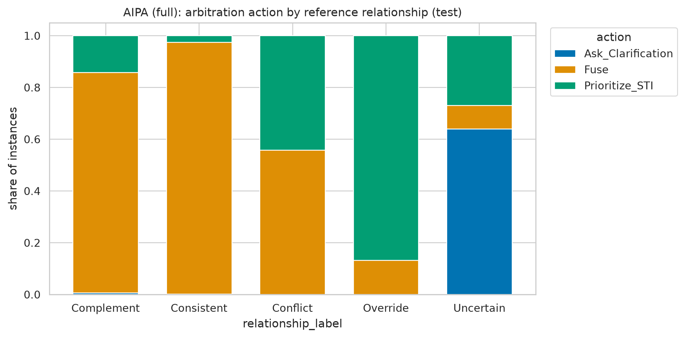
| model | subset | ECE | Brier |
|---|---|---|---|
| AIPA (full) | all | 0.045 | 0.063 |
| AIPA (full) | natural | 0.049 | 0.068 |
| AIPA (full) | synthetic | 0.079 | 0.017 |
| AIPA (rule policy) | all | 0.062 | 0.065 |
| AIPA (rule policy) | natural | 0.071 | 0.071 |
| AIPA (rule policy) | synthetic | 0.049 | 0.021 |
| AIPA w/o clarification | all | 0.038 | 0.062 |
| AIPA w/o clarification | natural | 0.041 | 0.068 |
| AIPA w/o clarification | synthetic | 0.079 | 0.016 |
| AIPA w/o counterfactual | all | 0.041 | 0.061 |
| AIPA w/o counterfactual | natural | 0.050 | 0.066 |
| AIPA w/o counterfactual | synthetic | 0.051 | 0.016 |
| AIPA w/o persistence | all | 0.043 | 0.063 |
| AIPA w/o persistence | natural | 0.047 | 0.069 |
| AIPA w/o persistence | synthetic | 0.079 | 0.017 |
| AIPA w/o relationship | all | 0.038 | 0.060 |
| AIPA w/o relationship | natural | 0.047 | 0.066 |
| AIPA w/o relationship | synthetic | 0.062 | 0.015 |
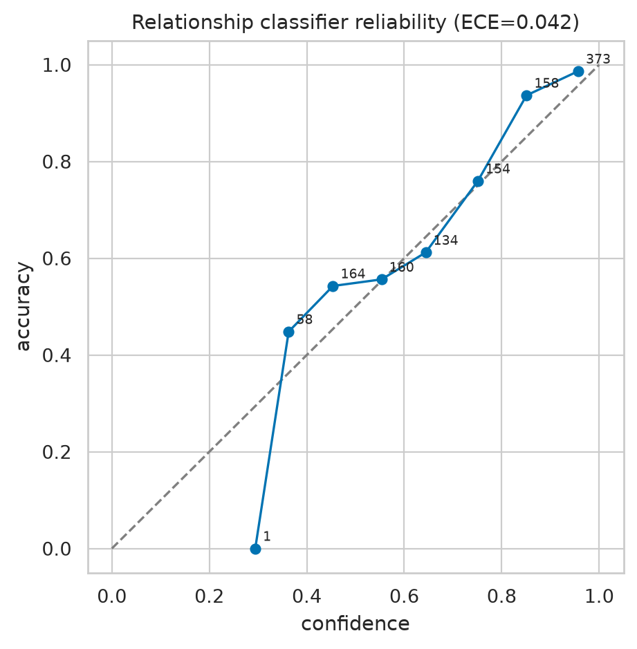
LTP or STI encodings of the trained AIPA model are set to zero and the fused ranking is recomputed. Δ NDCG@10 and top-10 overlap quantify how much each signal drove the factual ranking; driver labels use a top-K disagreement threshold τ = 0.1 and a dominance ratio of 1.5 (a signal is the sole driver when its disruption is at least 1.5x the other; both above τ without dominance = jointly driven; both below τ = neither). This is an interventional diagnostic of the model, not an estimate of causal effects.
| is_synthetic | relationship_label | n | mean_abs_delta_ndcg_LTP | mean_abs_delta_ndcg_STI | mean_delta_ndcg_LTP | mean_delta_ndcg_STI | overlap10_noLTP | overlap10_noSTI | STI_driven | LTP_driven | Jointly_driven | Neither_driven |
|---|---|---|---|---|---|---|---|---|---|---|---|---|
| False | Complement | 165 | 0.027 | 0.056 | 0.004 | 0.043 | 0.641 | 0.171 | 0.476 | 0.000 | 0.524 | 0.000 |
| False | Conflict | 48 | 0.025 | 0.043 | -0.001 | 0.036 | 0.602 | 0.161 | 0.375 | 0.000 | 0.625 | 0.000 |
| False | Consistent | 514 | 0.029 | 0.047 | 0.005 | 0.037 | 0.589 | 0.231 | 0.427 | 0.009 | 0.564 | 0.000 |
| False | Override | 14 | 0.012 | 0.084 | -0.012 | 0.084 | 0.739 | 0.104 | 0.607 | 0.000 | 0.393 | 0.000 |
| False | Uncertain | 336 | 0.011 | 0.049 | -0.002 | 0.029 | 0.747 | 0.252 | 0.631 | 0.007 | 0.362 | 0.000 |
| True | Conflict | 39 | 0.015 | 0.075 | 0.015 | 0.075 | 0.836 | 0.058 | 0.654 | 0.000 | 0.346 | 0.000 |
| True | Consistent | 47 | 0.025 | 0.035 | 0.011 | 0.019 | 0.577 | 0.255 | 0.468 | 0.000 | 0.532 | 0.000 |
| True | Override | 39 | 0.022 | 0.114 | -0.001 | 0.114 | 0.878 | 0.041 | 0.705 | 0.000 | 0.295 | 0.000 |
| model | subset | STI_driven_rate | LTP_driven_rate | Jointly_driven_rate | Neither_driven_rate | mean_abs_delta_LTP | mean_abs_delta_STI | mean_topk_overlap_noLTP | mean_topk_overlap_noSTI | n |
|---|---|---|---|---|---|---|---|---|---|---|
| AIPA (full) | all | 0.509 | 0.006 | 0.485 | 0.000 | 0.547 | 0.866 | 0.453 | 0.134 | 1202.000 |
| AIPA (full) | natural | 0.498 | 0.006 | 0.495 | 0.000 | 0.545 | 0.861 | 0.455 | 0.139 | 1077.000 |
| AIPA (full) | synthetic | 0.600 | 0.000 | 0.400 | 0.000 | 0.562 | 0.909 | 0.438 | 0.091 | 125.000 |
| AIPA (rule policy) | all | 0.483 | 0.003 | 0.514 | 0.000 | 0.574 | 0.884 | 0.426 | 0.116 | 1202.000 |
| AIPA (rule policy) | natural | 0.475 | 0.003 | 0.521 | 0.000 | 0.572 | 0.880 | 0.428 | 0.120 | 1077.000 |
| AIPA (rule policy) | synthetic | 0.548 | 0.000 | 0.452 | 0.000 | 0.596 | 0.916 | 0.404 | 0.084 | 125.000 |
| AIPA w/o clarification | all | 0.524 | 0.008 | 0.468 | 0.000 | 0.546 | 0.875 | 0.454 | 0.125 | 1202.000 |
| AIPA w/o clarification | natural | 0.515 | 0.009 | 0.476 | 0.000 | 0.545 | 0.871 | 0.455 | 0.129 | 1077.000 |
| AIPA w/o clarification | synthetic | 0.604 | 0.000 | 0.396 | 0.000 | 0.562 | 0.913 | 0.438 | 0.087 | 125.000 |
| AIPA w/o counterfactual | all | 0.472 | 0.005 | 0.523 | 0.000 | 0.576 | 0.881 | 0.424 | 0.119 | 1202.000 |
| AIPA w/o counterfactual | natural | 0.461 | 0.005 | 0.534 | 0.000 | 0.574 | 0.875 | 0.426 | 0.125 | 1077.000 |
| AIPA w/o counterfactual | synthetic | 0.568 | 0.004 | 0.428 | 0.000 | 0.591 | 0.928 | 0.409 | 0.072 | 125.000 |
| AIPA w/o persistence | all | 0.508 | 0.006 | 0.486 | 0.000 | 0.547 | 0.866 | 0.453 | 0.134 | 1202.000 |
| AIPA w/o persistence | natural | 0.497 | 0.006 | 0.496 | 0.000 | 0.545 | 0.860 | 0.455 | 0.140 | 1077.000 |
| AIPA w/o persistence | synthetic | 0.600 | 0.000 | 0.400 | 0.000 | 0.562 | 0.909 | 0.438 | 0.091 | 125.000 |
| AIPA w/o relationship | all | 0.475 | 0.005 | 0.521 | 0.000 | 0.572 | 0.882 | 0.428 | 0.118 | 1202.000 |
| AIPA w/o relationship | natural | 0.463 | 0.005 | 0.532 | 0.000 | 0.570 | 0.876 | 0.430 | 0.124 | 1077.000 |
| AIPA w/o relationship | synthetic | 0.572 | 0.004 | 0.424 | 0.000 | 0.592 | 0.930 | 0.408 | 0.070 | 125.000 |
Driver-action agreement (share of instances where the diagnostic driver matches the chosen arbitration action):
| is_synthetic | agreement |
|---|---|
| False | 0.485 |
| True | 0.636 |
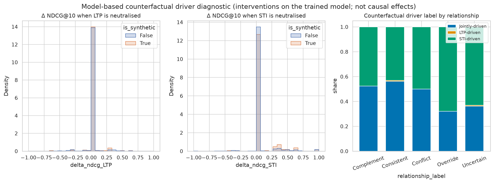
The tracker is replayed in chronological order per seeker over the natural test dialogues (conversationId, then turn). Persistent shifts detected on the test set (genre prioritised in ≥ 2 distinct sessions of a seeker): 52 across 2 seed(s).
| model | seed | seeker_id | genre | conv_id |
|---|---|---|---|---|
| AIPA w/o relationship | 42 | 1008 | Horror | 21026 |
| AIPA w/o relationship | 42 | 1035 | Comedy | 22801 |
| AIPA w/o relationship | 42 | 1046 | Musical | 22865 |
| AIPA w/o relationship | 42 | 1087 | War | 22841 |
| AIPA w/o counterfactual | 42 | 1008 | Horror | 21026 |
| AIPA w/o counterfactual | 42 | 1035 | Comedy | 22801 |
| AIPA w/o counterfactual | 42 | 1087 | War | 22841 |
| AIPA w/o counterfactual | 42 | 959 | Romance | 22159 |
| AIPA w/o clarification | 42 | 1011 | Horror | 21073 |
| AIPA w/o clarification | 42 | 1034 | Comedy | 22026 |
| AIPA w/o clarification | 42 | 1035 | Comedy | 22801 |
| AIPA w/o clarification | 42 | 1054 | Comedy | 22083 |
| AIPA w/o clarification | 42 | 1087 | War | 22841 |
| AIPA w/o clarification | 42 | 959 | Romance | 22159 |
| AIPA w/o clarification | 42 | 972 | Comedy | 22348 |
| AIPA w/o clarification | 42 | 979 | Musical | 21644 |
| AIPA (rule policy) | 42 | 1035 | Comedy | 22801 |
| AIPA (rule policy) | 42 | 1087 | War | 22841 |
| AIPA (rule policy) | 42 | 959 | Romance | 22159 |
| AIPA (full) | 42 | 1008 | Horror | 21026 |
Effect of the tracker (AIPA (full) vs AIPA w/o persistence, Hit@10) on all natural instances, on instances of seekers with >= 3 test sessions, and on the instances whose LTP prior the tracker actually changed:
| subset | n | n_seekers | persistence_k | n_shifts_mean | hit10_full | hit10_without | mean_diff | t_p | wilcoxon_p | perm_p | n_pairs |
|---|---|---|---|---|---|---|---|---|---|---|---|
| natural | 1077 | 57 | 2 | 6.0000 | 0.0929 | 0.0929 | 0.0000 | n/a | n/a | n/a | 2154 |
| seekers_with_ge3_sessions | 946 | 29 | 2 | 6.0000 | 0.0951 | 0.0951 | 0.0000 | n/a | n/a | n/a | 1892 |
| tracker_affected | 87 | 8 | 2 | 6.0000 | 0.1092 | 0.1092 | 0.0000 | n/a | n/a | n/a | 174 |
The tracker changed 87 instance(s) but the Hit@10 difference on that subset is not significant; no persistence effect is claimed.
persistence_k sweep over [1, 2, 3] (validation split for selection; the test rows are reported for transparency only and were not used to choose k = 2):
| split | k | seeds | n_shifts_mean | n_seekers_shifted_mean | n_multi_session_mean | n_affected_mean | hit10_multi_without_mean | hit10_multi_with_mean | hit10_multi_delta_mean | hit10_affected_without_mean | hit10_affected_with_mean | n_rank_changed_mean |
|---|---|---|---|---|---|---|---|---|---|---|---|---|
| test | 1 | 2 | 54.5000 | 37.0000 | 946.0000 | 542.0000 | 0.0951 | 0.0962 | 0.0011 | 0.0870 | 0.0878 | 481.5000 |
| test | 2 | 2 | 6.0000 | 6.0000 | 946.0000 | 77.0000 | 0.0951 | 0.0951 | 0.0000 | 0.1176 | 0.1176 | 68.0000 |
| test | 3 | 2 | 0.5000 | 0.5000 | 946.0000 | 1.5000 | 0.0951 | 0.0951 | 0.0000 | 0.3333 | 0.3333 | 1.0000 |
| valid | 1 | 2 | 34.0000 | 31.5000 | 266.0000 | 135.5000 | 0.0959 | 0.0977 | 0.0019 | 0.0978 | 0.1106 | 115.5000 |
| valid | 2 | 2 | 1.0000 | 1.0000 | 266.0000 | 2.0000 | 0.0959 | 0.0959 | 0.0000 | 0.0000 | 0.0000 | 1.0000 |
| valid | 3 | 2 | 0.0000 | 0.0000 | 266.0000 | 0.0000 | 0.0959 | 0.0959 | 0.0000 | n/a | n/a | 0.0000 |
| history_bucket | n | Recall@10 | Hit@10 | NDCG@10 | MRR@10 | Recall@20 | Hit@20 | NDCG@20 | MRR@20 |
|---|---|---|---|---|---|---|---|---|---|
| cold | 110 | 0.114 | 0.114 | 0.064 | 0.048 | 0.150 | 0.150 | 0.072 | 0.051 |
| short | 69 | 0.109 | 0.109 | 0.054 | 0.038 | 0.130 | 0.130 | 0.060 | 0.040 |
| mid | 132 | 0.076 | 0.076 | 0.046 | 0.037 | 0.129 | 0.129 | 0.059 | 0.040 |
| long | 766 | 0.091 | 0.091 | 0.052 | 0.040 | 0.136 | 0.136 | 0.063 | 0.043 |
| history_bucket | model | n | seeds | Hit@10_mean | Hit@10_std | NDCG@10_mean | NDCG@10_std |
|---|---|---|---|---|---|---|---|
| cold | LTP-only | 110 | 2 | 0.068 | 0.014 | 0.035 | 0.004 |
| cold | STI-only | 110 | 2 | 0.123 | 0.005 | 0.069 | 0.006 |
| cold | Naive fusion | 110 | 2 | 0.100 | 0.009 | 0.061 | 0.006 |
| cold | Adaptive fusion | 110 | 2 | 0.123 | 0.005 | 0.071 | 0.005 |
| cold | Sequential (GRU) | 110 | 2 | 0.064 | 0.000 | 0.036 | 0.001 |
| cold | Conversation-aware | 110 | 2 | 0.114 | 0.005 | 0.057 | 0.001 |
| cold | SASRec | 110 | 2 | 0.055 | 0.000 | 0.027 | 0.006 |
| cold | KBRD-style | 110 | 2 | 0.150 | 0.005 | 0.081 | 0.006 |
| cold | AIPA w/o relationship | 110 | 2 | 0.123 | 0.005 | 0.068 | 0.004 |
| cold | AIPA w/o counterfactual | 110 | 2 | 0.127 | 0.009 | 0.066 | 0.002 |
| cold | AIPA w/o clarification | 110 | 2 | 0.114 | 0.014 | 0.066 | 0.004 |
| cold | AIPA w/o persistence | 110 | 2 | 0.114 | 0.014 | 0.064 | 0.002 |
| cold | AIPA (rule policy) | 110 | 2 | 0.118 | 0.000 | 0.075 | 0.001 |
| cold | AIPA (full) | 110 | 2 | 0.114 | 0.014 | 0.064 | 0.002 |
| short | LTP-only | 69 | 2 | 0.051 | 0.036 | 0.018 | 0.013 |
| short | STI-only | 69 | 2 | 0.109 | 0.007 | 0.052 | 0.002 |
| short | Naive fusion | 69 | 2 | 0.087 | 0.000 | 0.046 | 0.002 |
| short | Adaptive fusion | 69 | 2 | 0.087 | 0.000 | 0.043 | 0.001 |
| short | Sequential (GRU) | 69 | 2 | 0.080 | 0.022 | 0.048 | 0.005 |
| short | Conversation-aware | 69 | 2 | 0.109 | 0.007 | 0.061 | 0.004 |
| short | SASRec | 69 | 2 | 0.072 | 0.014 | 0.031 | 0.009 |
| short | KBRD-style | 69 | 2 | 0.087 | 0.029 | 0.050 | 0.013 |
| short | AIPA w/o relationship | 69 | 2 | 0.123 | 0.036 | 0.059 | 0.015 |
| short | AIPA w/o counterfactual | 69 | 2 | 0.123 | 0.036 | 0.059 | 0.015 |
| short | AIPA w/o clarification | 69 | 2 | 0.101 | 0.014 | 0.051 | 0.004 |
| short | AIPA w/o persistence | 69 | 2 | 0.109 | 0.022 | 0.054 | 0.004 |
| short | AIPA (rule policy) | 69 | 2 | 0.043 | 0.014 | 0.027 | 0.003 |
| short | AIPA (full) | 69 | 2 | 0.109 | 0.022 | 0.054 | 0.004 |
| mid | LTP-only | 132 | 2 | 0.057 | 0.011 | 0.035 | 0.000 |
| mid | STI-only | 132 | 2 | 0.080 | 0.004 | 0.046 | 0.002 |
| mid | Naive fusion | 132 | 2 | 0.087 | 0.011 | 0.045 | 0.005 |
| mid | Adaptive fusion | 132 | 2 | 0.080 | 0.011 | 0.053 | 0.008 |
| mid | Sequential (GRU) | 132 | 2 | 0.076 | 0.015 | 0.047 | 0.017 |
| mid | Conversation-aware | 132 | 2 | 0.061 | 0.000 | 0.040 | 0.009 |
| mid | SASRec | 132 | 2 | 0.061 | 0.008 | 0.033 | 0.007 |
| mid | KBRD-style | 132 | 2 | 0.087 | 0.011 | 0.049 | 0.005 |
| mid | AIPA w/o relationship | 132 | 2 | 0.095 | 0.011 | 0.049 | 0.003 |
| mid | AIPA w/o counterfactual | 132 | 2 | 0.095 | 0.011 | 0.050 | 0.004 |
| mid | AIPA w/o clarification | 132 | 2 | 0.076 | 0.015 | 0.045 | 0.001 |
| mid | AIPA w/o persistence | 132 | 2 | 0.076 | 0.015 | 0.046 | 0.003 |
| mid | AIPA (rule policy) | 132 | 2 | 0.080 | 0.019 | 0.049 | 0.012 |
| mid | AIPA (full) | 132 | 2 | 0.076 | 0.015 | 0.046 | 0.003 |
| long | LTP-only | 766 | 2 | 0.050 | 0.002 | 0.029 | 0.002 |
| long | STI-only | 766 | 2 | 0.095 | 0.006 | 0.051 | 0.000 |
| long | Naive fusion | 766 | 2 | 0.093 | 0.004 | 0.049 | 0.003 |
| long | Adaptive fusion | 766 | 2 | 0.093 | 0.001 | 0.052 | 0.001 |
| long | Sequential (GRU) | 766 | 2 | 0.063 | 0.007 | 0.034 | 0.001 |
| long | Conversation-aware | 766 | 2 | 0.072 | 0.002 | 0.040 | 0.000 |
| long | SASRec | 766 | 2 | 0.057 | 0.003 | 0.032 | 0.001 |
| long | KBRD-style | 766 | 2 | 0.095 | 0.004 | 0.049 | 0.001 |
| long | AIPA w/o relationship | 766 | 2 | 0.102 | 0.003 | 0.053 | 0.001 |
| long | AIPA w/o counterfactual | 766 | 2 | 0.099 | 0.003 | 0.052 | 0.002 |
| long | AIPA w/o clarification | 766 | 2 | 0.088 | 0.002 | 0.050 | 0.000 |
| long | AIPA w/o persistence | 766 | 2 | 0.091 | 0.003 | 0.052 | 0.000 |
| long | AIPA (rule policy) | 766 | 2 | 0.089 | 0.008 | 0.050 | 0.005 |
| long | AIPA (full) | 766 | 2 | 0.091 | 0.003 | 0.052 | 0.000 |
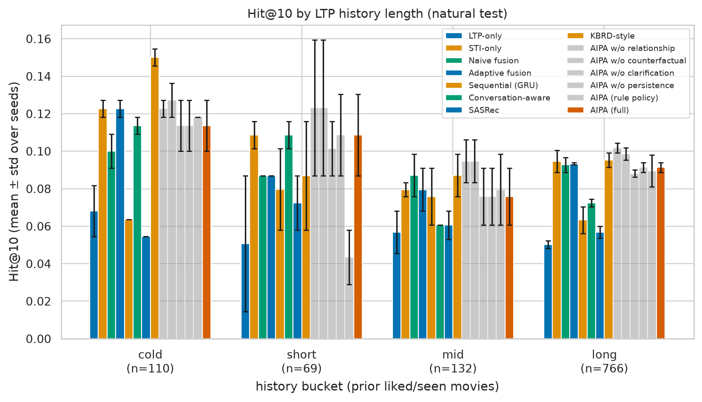
| target_genre | model | n | seeds | Hit@10_mean | Hit@10_std | NDCG@10_mean | NDCG@10_std |
|---|---|---|---|---|---|---|---|
| Action | LTP-only | 327 | 2 | 0.092 | 0.006 | 0.057 | 0.000 |
| Action | STI-only | 327 | 2 | 0.157 | 0.002 | 0.087 | 0.007 |
| Action | Naive fusion | 327 | 2 | 0.159 | 0.006 | 0.090 | 0.006 |
| Action | Adaptive fusion | 327 | 2 | 0.151 | 0.002 | 0.091 | 0.001 |
| Action | Sequential (GRU) | 327 | 2 | 0.098 | 0.012 | 0.056 | 0.001 |
| Action | Conversation-aware | 327 | 2 | 0.127 | 0.017 | 0.072 | 0.005 |
| Action | SASRec | 327 | 2 | 0.084 | 0.008 | 0.053 | 0.009 |
| Action | KBRD-style | 327 | 2 | 0.170 | 0.002 | 0.088 | 0.001 |
| Action | AIPA w/o relationship | 327 | 2 | 0.164 | 0.002 | 0.093 | 0.002 |
| Action | AIPA w/o counterfactual | 327 | 2 | 0.167 | 0.002 | 0.094 | 0.001 |
| Action | AIPA w/o clarification | 327 | 2 | 0.148 | 0.014 | 0.091 | 0.009 |
| Action | AIPA w/o persistence | 327 | 2 | 0.150 | 0.012 | 0.093 | 0.009 |
| Action | AIPA (rule policy) | 327 | 2 | 0.133 | 0.008 | 0.076 | 0.007 |
| Action | AIPA (full) | 327 | 2 | 0.150 | 0.012 | 0.093 | 0.009 |
| Adventure | LTP-only | 229 | 2 | 0.151 | 0.024 | 0.091 | 0.010 |
| Adventure | STI-only | 229 | 2 | 0.221 | 0.011 | 0.127 | 0.014 |
| Adventure | Naive fusion | 229 | 2 | 0.210 | 0.017 | 0.124 | 0.015 |
| Adventure | Adaptive fusion | 229 | 2 | 0.229 | 0.002 | 0.143 | 0.005 |
| Adventure | Sequential (GRU) | 229 | 2 | 0.177 | 0.011 | 0.107 | 0.007 |
| Adventure | Conversation-aware | 229 | 2 | 0.203 | 0.002 | 0.119 | 0.002 |
| Adventure | SASRec | 229 | 2 | 0.153 | 0.000 | 0.094 | 0.014 |
| Adventure | KBRD-style | 229 | 2 | 0.236 | 0.000 | 0.133 | 0.007 |
| Adventure | AIPA w/o relationship | 229 | 2 | 0.236 | 0.013 | 0.139 | 0.004 |
| Adventure | AIPA w/o counterfactual | 229 | 2 | 0.234 | 0.011 | 0.138 | 0.003 |
| Adventure | AIPA w/o clarification | 229 | 2 | 0.212 | 0.002 | 0.137 | 0.003 |
| Adventure | AIPA w/o persistence | 229 | 2 | 0.214 | 0.009 | 0.140 | 0.004 |
| Adventure | AIPA (rule policy) | 229 | 2 | 0.203 | 0.011 | 0.129 | 0.005 |
| Adventure | AIPA (full) | 229 | 2 | 0.214 | 0.009 | 0.140 | 0.004 |
| Comedy | LTP-only | 391 | 2 | 0.018 | 0.005 | 0.008 | 0.002 |
| Comedy | STI-only | 391 | 2 | 0.074 | 0.005 | 0.034 | 0.003 |
| Comedy | Naive fusion | 391 | 2 | 0.066 | 0.003 | 0.030 | 0.002 |
| Comedy | Adaptive fusion | 391 | 2 | 0.063 | 0.004 | 0.032 | 0.003 |
| Comedy | Sequential (GRU) | 391 | 2 | 0.037 | 0.004 | 0.017 | 0.000 |
| Comedy | Conversation-aware | 391 | 2 | 0.050 | 0.017 | 0.021 | 0.006 |
| Comedy | SASRec | 391 | 2 | 0.033 | 0.000 | 0.015 | 0.002 |
| Comedy | KBRD-style | 391 | 2 | 0.083 | 0.001 | 0.038 | 0.001 |
| Comedy | AIPA w/o relationship | 391 | 2 | 0.090 | 0.005 | 0.042 | 0.005 |
| Comedy | AIPA w/o counterfactual | 391 | 2 | 0.083 | 0.001 | 0.040 | 0.005 |
| Comedy | AIPA w/o clarification | 391 | 2 | 0.061 | 0.005 | 0.028 | 0.003 |
| Comedy | AIPA w/o persistence | 391 | 2 | 0.068 | 0.004 | 0.031 | 0.002 |
| Comedy | AIPA (rule policy) | 391 | 2 | 0.075 | 0.009 | 0.036 | 0.000 |
| Comedy | AIPA (full) | 391 | 2 | 0.068 | 0.004 | 0.031 | 0.002 |
| Crime | LTP-only | 176 | 2 | 0.028 | 0.017 | 0.013 | 0.008 |
| Crime | STI-only | 176 | 2 | 0.077 | 0.003 | 0.035 | 0.002 |
| Crime | Naive fusion | 176 | 2 | 0.074 | 0.006 | 0.031 | 0.002 |
| Crime | Adaptive fusion | 176 | 2 | 0.074 | 0.000 | 0.035 | 0.001 |
| Crime | Sequential (GRU) | 176 | 2 | 0.028 | 0.023 | 0.011 | 0.009 |
| Crime | Conversation-aware | 176 | 2 | 0.054 | 0.009 | 0.022 | 0.003 |
| Crime | SASRec | 176 | 2 | 0.026 | 0.014 | 0.009 | 0.006 |
| Crime | KBRD-style | 176 | 2 | 0.077 | 0.003 | 0.034 | 0.001 |
| Crime | AIPA w/o relationship | 176 | 2 | 0.085 | 0.000 | 0.036 | 0.000 |
| Crime | AIPA w/o counterfactual | 176 | 2 | 0.091 | 0.000 | 0.037 | 0.000 |
| Crime | AIPA w/o clarification | 176 | 2 | 0.077 | 0.026 | 0.035 | 0.012 |
| Crime | AIPA w/o persistence | 176 | 2 | 0.080 | 0.028 | 0.037 | 0.015 |
| Crime | AIPA (rule policy) | 176 | 2 | 0.068 | 0.000 | 0.027 | 0.002 |
| Crime | AIPA (full) | 176 | 2 | 0.080 | 0.028 | 0.037 | 0.015 |
| Drama | LTP-only | 322 | 2 | 0.017 | 0.005 | 0.006 | 0.001 |
| Drama | STI-only | 322 | 2 | 0.053 | 0.006 | 0.024 | 0.003 |
| Drama | Naive fusion | 322 | 2 | 0.043 | 0.000 | 0.021 | 0.000 |
| Drama | Adaptive fusion | 322 | 2 | 0.051 | 0.011 | 0.023 | 0.004 |
| Drama | Sequential (GRU) | 322 | 2 | 0.014 | 0.002 | 0.005 | 0.001 |
| Drama | Conversation-aware | 322 | 2 | 0.033 | 0.005 | 0.016 | 0.004 |
| Drama | SASRec | 322 | 2 | 0.022 | 0.006 | 0.009 | 0.003 |
| Drama | KBRD-style | 322 | 2 | 0.059 | 0.006 | 0.025 | 0.002 |
| Drama | AIPA w/o relationship | 322 | 2 | 0.064 | 0.005 | 0.028 | 0.004 |
| Drama | AIPA w/o counterfactual | 322 | 2 | 0.057 | 0.002 | 0.026 | 0.002 |
| Drama | AIPA w/o clarification | 322 | 2 | 0.047 | 0.009 | 0.025 | 0.006 |
| Drama | AIPA w/o persistence | 322 | 2 | 0.048 | 0.011 | 0.026 | 0.007 |
| Drama | AIPA (rule policy) | 322 | 2 | 0.047 | 0.000 | 0.025 | 0.002 |
| Drama | AIPA (full) | 322 | 2 | 0.048 | 0.011 | 0.026 | 0.007 |
| Romance | LTP-only | 166 | 2 | 0.009 | 0.003 | 0.003 | 0.001 |
| Romance | STI-only | 166 | 2 | 0.057 | 0.003 | 0.029 | 0.003 |
| Romance | Naive fusion | 166 | 2 | 0.045 | 0.003 | 0.020 | 0.003 |
| Romance | Adaptive fusion | 166 | 2 | 0.042 | 0.006 | 0.017 | 0.003 |
| Romance | Sequential (GRU) | 166 | 2 | 0.018 | 0.000 | 0.008 | 0.001 |
| Romance | Conversation-aware | 166 | 2 | 0.036 | 0.018 | 0.018 | 0.010 |
| Romance | SASRec | 166 | 2 | 0.018 | 0.006 | 0.011 | 0.006 |
| Romance | KBRD-style | 166 | 2 | 0.066 | 0.012 | 0.031 | 0.005 |
| Romance | AIPA w/o relationship | 166 | 2 | 0.075 | 0.003 | 0.029 | 0.003 |
| Romance | AIPA w/o counterfactual | 166 | 2 | 0.066 | 0.000 | 0.026 | 0.002 |
| Romance | AIPA w/o clarification | 166 | 2 | 0.057 | 0.003 | 0.026 | 0.002 |
| Romance | AIPA w/o persistence | 166 | 2 | 0.057 | 0.003 | 0.026 | 0.001 |
| Romance | AIPA (rule policy) | 166 | 2 | 0.045 | 0.003 | 0.019 | 0.004 |
| Romance | AIPA (full) | 166 | 2 | 0.057 | 0.003 | 0.026 | 0.001 |
| Sci-Fi | LTP-only | 178 | 2 | 0.112 | 0.011 | 0.079 | 0.010 |
| Sci-Fi | STI-only | 178 | 2 | 0.169 | 0.011 | 0.099 | 0.014 |
| Sci-Fi | Naive fusion | 178 | 2 | 0.191 | 0.022 | 0.113 | 0.016 |
| Sci-Fi | Adaptive fusion | 178 | 2 | 0.183 | 0.003 | 0.118 | 0.001 |
| Sci-Fi | Sequential (GRU) | 178 | 2 | 0.146 | 0.011 | 0.090 | 0.002 |
| Sci-Fi | Conversation-aware | 178 | 2 | 0.166 | 0.025 | 0.096 | 0.010 |
| Sci-Fi | SASRec | 178 | 2 | 0.124 | 0.011 | 0.083 | 0.017 |
| Sci-Fi | KBRD-style | 178 | 2 | 0.199 | 0.020 | 0.112 | 0.003 |
| Sci-Fi | AIPA w/o relationship | 178 | 2 | 0.177 | 0.014 | 0.111 | 0.003 |
| Sci-Fi | AIPA w/o counterfactual | 178 | 2 | 0.180 | 0.017 | 0.112 | 0.006 |
| Sci-Fi | AIPA w/o clarification | 178 | 2 | 0.185 | 0.017 | 0.118 | 0.008 |
| Sci-Fi | AIPA w/o persistence | 178 | 2 | 0.185 | 0.011 | 0.122 | 0.008 |
| Sci-Fi | AIPA (rule policy) | 178 | 2 | 0.171 | 0.014 | 0.103 | 0.009 |
| Sci-Fi | AIPA (full) | 178 | 2 | 0.185 | 0.011 | 0.122 | 0.008 |
| Thriller | LTP-only | 250 | 2 | 0.022 | 0.018 | 0.009 | 0.008 |
| Thriller | STI-only | 250 | 2 | 0.068 | 0.012 | 0.033 | 0.001 |
| Thriller | Naive fusion | 250 | 2 | 0.058 | 0.010 | 0.028 | 0.005 |
| Thriller | Adaptive fusion | 250 | 2 | 0.056 | 0.000 | 0.028 | 0.003 |
| Thriller | Sequential (GRU) | 250 | 2 | 0.042 | 0.002 | 0.014 | 0.001 |
| Thriller | Conversation-aware | 250 | 2 | 0.048 | 0.008 | 0.020 | 0.002 |
| Thriller | SASRec | 250 | 2 | 0.028 | 0.012 | 0.011 | 0.005 |
| Thriller | KBRD-style | 250 | 2 | 0.074 | 0.006 | 0.035 | 0.004 |
| Thriller | AIPA w/o relationship | 250 | 2 | 0.056 | 0.000 | 0.026 | 0.000 |
| Thriller | AIPA w/o counterfactual | 250 | 2 | 0.054 | 0.002 | 0.025 | 0.001 |
| Thriller | AIPA w/o clarification | 250 | 2 | 0.062 | 0.002 | 0.029 | 0.001 |
| Thriller | AIPA w/o persistence | 250 | 2 | 0.062 | 0.002 | 0.030 | 0.002 |
| Thriller | AIPA (rule policy) | 250 | 2 | 0.058 | 0.002 | 0.027 | 0.000 |
| Thriller | AIPA (full) | 250 | 2 | 0.062 | 0.002 | 0.030 | 0.002 |
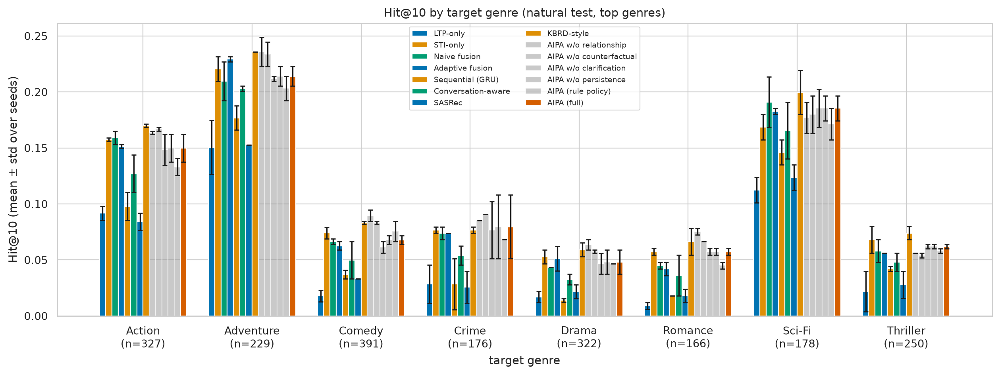
| sti_bucket | n | Recall@10 | Hit@10 | NDCG@10 | MRR@10 | Recall@20 | Hit@20 | NDCG@20 | MRR@20 |
|---|---|---|---|---|---|---|---|---|---|
| 1 | 111 | 0.144 | 0.144 | 0.078 | 0.059 | 0.185 | 0.185 | 0.089 | 0.061 |
| 2-3 | 356 | 0.087 | 0.087 | 0.046 | 0.033 | 0.135 | 0.135 | 0.058 | 0.036 |
| 4-6 | 424 | 0.096 | 0.096 | 0.058 | 0.047 | 0.134 | 0.134 | 0.068 | 0.050 |
| >6 | 186 | 0.067 | 0.067 | 0.036 | 0.027 | 0.116 | 0.116 | 0.049 | 0.030 |
| model | 1 | 2 | 3 |
|---|---|---|---|
| AIPA (full) | 0.241 | 0.238 | 0.167 |
| AIPA (rule policy) | 0.259 | 0.190 | 0.183 |
| AIPA w/o clarification | 0.241 | 0.190 | 0.183 |
| AIPA w/o counterfactual | 0.185 | 0.238 | 0.250 |
| AIPA w/o persistence | 0.241 | 0.238 | 0.167 |
| AIPA w/o relationship | 0.185 | 0.214 | 0.250 |
| Adaptive fusion | 0.278 | 0.214 | 0.250 |
| Conversation-aware | 0.148 | 0.119 | 0.067 |
| KBRD-style | 0.426 | 0.167 | 0.183 |
| LTP-only | 0.000 | 0.048 | 0.050 |
| Naive fusion | 0.296 | 0.214 | 0.233 |
| SASRec | 0.056 | 0.000 | 0.083 |
| STI-only | 0.296 | 0.214 | 0.200 |
| Sequential (GRU) | 0.000 | 0.024 | 0.050 |
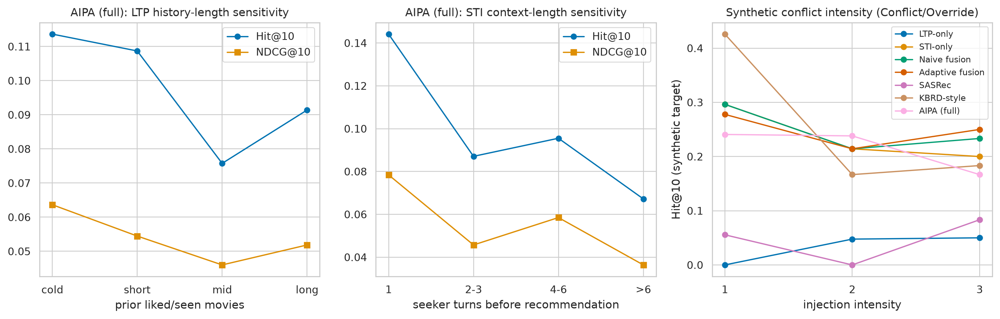
| alpha_ltp | Hit@10 | Recall@10 | NDCG@10 | MRR@10 | Hit@20 | Recall@20 | NDCG@20 | MRR@20 | Hit@10_synthetic |
|---|---|---|---|---|---|---|---|---|---|
| 0.000 | 0.087 | 0.087 | 0.048 | 0.036 | 0.129 | 0.129 | 0.058 | 0.039 | 0.124 |
| 0.250 | 0.088 | 0.088 | 0.049 | 0.037 | 0.137 | 0.137 | 0.061 | 0.040 | 0.156 |
| 0.500 | 0.092 | 0.092 | 0.050 | 0.037 | 0.132 | 0.132 | 0.060 | 0.040 | 0.172 |
| 0.750 | 0.077 | 0.077 | 0.042 | 0.031 | 0.114 | 0.114 | 0.051 | 0.034 | 0.132 |
| 1.000 | 0.029 | 0.029 | 0.013 | 0.009 | 0.044 | 0.044 | 0.017 | 0.010 | 0.008 |
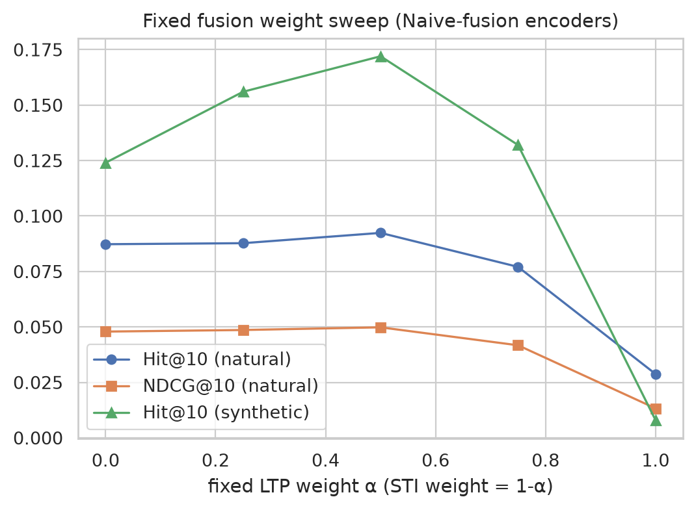
| model | n | Hit@10 | NDCG@10 | MRR@10 |
|---|---|---|---|---|
| LTP-only | 1077 | 0.053 ± 0.002 [0.045, 0.063] | 0.030 ± 0.001 [0.025, 0.037] | 0.023 ± 0.000 [0.018, 0.029] |
| STI-only | 1077 | 0.097 ± 0.003 [0.084, 0.109] | 0.052 ± 0.001 [0.046, 0.060] | 0.039 ± 0.002 [0.033, 0.045] |
| Naive fusion | 1077 | 0.092 ± 0.005 [0.078, 0.104] | 0.050 ± 0.003 [0.043, 0.057] | 0.037 ± 0.003 [0.031, 0.043] |
| Adaptive fusion | 1077 | 0.094 ± 0.002 [0.082, 0.106] | 0.053 ± 0.001 [0.046, 0.061] | 0.041 ± 0.000 [0.034, 0.048] |
| AIPA w/o relationship | 1077 | 0.104 ± 0.002 [0.093, 0.117] | 0.054 ± 0.002 [0.047, 0.062] | 0.039 ± 0.002 [0.033, 0.045] |
| AIPA w/o counterfactual | 1077 | 0.103 ± 0.002 [0.091, 0.116] | 0.053 ± 0.002 [0.046, 0.061] | 0.039 ± 0.002 [0.033, 0.044] |
| AIPA w/o clarification | 1077 | 0.090 ± 0.001 [0.079, 0.104] | 0.051 ± 0.000 [0.043, 0.059] | 0.039 ± 0.000 [0.033, 0.046] |
| AIPA w/o persistence | 1077 | 0.093 ± 0.000 [0.082, 0.107] | 0.052 ± 0.000 [0.045, 0.060] | 0.040 ± 0.001 [0.034, 0.047] |
| AIPA (rule policy) | 1077 | 0.088 ± 0.005 [0.077, 0.100] | 0.051 ± 0.002 [0.044, 0.058] | 0.039 ± 0.002 [0.033, 0.047] |
| AIPA (full) | 1077 | 0.093 ± 0.000 [0.082, 0.107] | 0.053 ± 0.000 [0.045, 0.060] | 0.040 ± 0.001 [0.034, 0.047] |
Per-ablation verdicts (H3), natural Hit@10, AIPA (full) vs. ablation:
| ablation | verdict | mean_diff | p_holm |
|---|---|---|---|
| AIPA w/o relationship | NOT SUPPORTED (difference not significant) | -0.0116 | 1.0000 |
| AIPA w/o counterfactual | NOT SUPPORTED (difference not significant) | -0.0097 | 1.0000 |
| AIPA w/o clarification | NOT SUPPORTED (difference not significant) | 0.0028 | 1.0000 |
| AIPA w/o persistence | inconclusive (no variance between systems) | 0.0000 | n/a |
| AIPA (rule policy) | NOT SUPPORTED (difference not significant) | 0.0046 | 1.0000 |
| model | n_parameters | model_size_mb | train_time_s | epochs_run | inference_time_s | cpu_inference_ms_per_sample | gpu_peak_mem_mb |
|---|---|---|---|---|---|---|---|
| LTP-only | 515597 | 2.062 | 2.270 | 5.500 | 0.018 | 0.015 | n/a |
| STI-only | 515597 | 2.062 | 2.525 | 6.000 | 0.018 | 0.014 | n/a |
| Naive fusion | 515597 | 2.062 | 2.505 | 6.000 | 0.017 | 0.014 | n/a |
| Adaptive fusion | 526862 | 2.107 | 2.630 | 5.500 | 0.022 | 0.018 | n/a |
| Sequential (GRU) | 492877 | 1.972 | 6.465 | 6.000 | 0.028 | 0.023 | n/a |
| Conversation-aware | 476173 | 1.905 | 1.125 | 5.500 | 0.011 | 0.009 | n/a |
| SASRec | 526413 | 2.106 | 28.860 | 8.000 | 0.040 | 0.033 | n/a |
| KBRD-style | 477814 | 1.911 | 1.700 | 6.500 | 0.010 | 0.009 | n/a |
| AIPA w/o relationship | 547222 | 2.189 | 5.425 | 6.500 | 0.034 | 0.028 | n/a |
| AIPA w/o counterfactual | 547222 | 2.189 | 5.730 | 6.500 | 0.046 | 0.039 | n/a |
| AIPA w/o clarification | 547542 | 2.190 | 6.080 | 6.000 | 0.040 | 0.034 | n/a |
| AIPA w/o persistence | 547542 | 2.190 | 4.165 | 6.000 | 0.031 | 0.026 | n/a |
| AIPA (rule policy) | 535378 | 2.142 | 5.020 | 7.000 | 0.044 | 0.037 | n/a |
| AIPA (full) | 547542 | 2.190 | 3.985 | 6.000 | 0.032 | 0.026 | n/a |
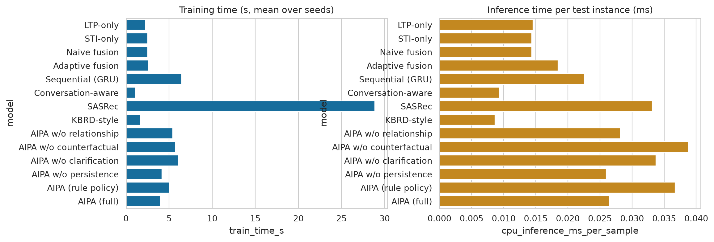
| subset | relationship_label | n | miss_rate@10 | relationship_error_rate | clarification_rate | mean_target_rank | median_target_rank | cold_seeker_share |
|---|---|---|---|---|---|---|---|---|
| natural | Complement | 165 | 0.909 | 0.694 | 0.006 | 1216.655 | 456.000 | 0.000 |
| natural | Conflict | 48 | 0.927 | 0.677 | 0.000 | 1153.062 | 356.500 | 0.000 |
| natural | Consistent | 514 | 0.900 | 0.169 | 0.002 | 1086.559 | 341.500 | 0.000 |
| natural | Override | 14 | 0.857 | 0.500 | 0.000 | 1064.071 | 138.000 | 0.000 |
| natural | Uncertain | 336 | 0.917 | 0.101 | 0.640 | 1358.417 | 440.000 | 0.327 |
| synthetic | Conflict | 39 | 0.821 | 0.064 | 0.000 | 523.590 | 47.000 | 0.000 |
| synthetic | Consistent | 47 | 0.957 | 0.000 | 0.000 | 1178.160 | 620.000 | 0.000 |
| synthetic | Override | 39 | 0.756 | 0.026 | 0.000 | 230.987 | 21.500 | 0.000 |
Case 1 - 21414/7/170059 (natural; seeker 1034)
Case 2 - 21394/3/140335 (natural; seeker 1034)
Case 3 - 20721/8/93013 (natural; seeker 1009)
Case 4 - 22721/3/98740 (natural; seeker 1087)
Case 5 - 22009/2/98259 (natural; seeker 1035)
Case 6 - 21861/11/204870 (natural; seeker 1039)
Case 7 - 20191/13/108426 (natural; seeker 971)
Case 8 - 20847/6/78418 (natural; seeker 1001)
Case 9 - syn/con3/21530/6/101794 (synthetic; seeker 1024)
Case 10 - syn/ove2/22190/5/205435 (synthetic; seeker 972)
Case 11 - 22370/11/184418 (natural; seeker 1074)
Case 12 - 22095/7/90253 (natural; seeker 959)
| hypothesis | comparison | verdict | mean_diff | p_holm |
|---|---|---|---|---|
| H1 (overall) | AIPA (full) vs LTP-only | SUPPORTED | 0.0399 | 0.0073 |
| H1 (overall) | AIPA (full) vs STI-only | NOT SUPPORTED (difference not significant) | -0.0037 | 1.0000 |
| H1 (overall) | AIPA (full) vs Naive fusion | NOT SUPPORTED (difference not significant) | 0.0005 | 1.0000 |
| H1 (overall) | AIPA (full) vs Adaptive fusion | NOT SUPPORTED (difference not significant) | -0.0014 | 1.0000 |
| H1 (overall) | AIPA (full) vs Sequential (GRU) | NOT SUPPORTED (difference not significant) | 0.0269 | 0.2171 |
| H1 (overall) | AIPA (full) vs Conversation-aware | NOT SUPPORTED (difference not significant) | 0.0153 | 1.0000 |
| H1 (overall) | AIPA (full) vs SASRec | SUPPORTED | 0.0348 | 0.0326 |
| H1 (overall) | AIPA (full) vs KBRD-style | NOT SUPPORTED (difference not significant) | -0.0065 | 1.0000 |
| H2 (conflict_natural_strict) | AIPA (full) vs LTP-only | NOT SUPPORTED (difference not significant) | 0.0726 | 1.0000 |
| H2 (conflict_natural_strict) | AIPA (full) vs STI-only | NOT SUPPORTED (difference not significant) | 0.0242 | 1.0000 |
| H2 (conflict_natural_strict) | AIPA (full) vs Naive fusion | NOT SUPPORTED (difference not significant) | 0.0242 | 1.0000 |
| H2 (conflict_natural_strict) | AIPA (full) vs Adaptive fusion | NOT SUPPORTED (difference not significant) | 0.0081 | 1.0000 |
| H2 (conflict_natural_strict) | AIPA (full) vs SASRec | NOT SUPPORTED (difference not significant) | 0.0726 | 1.0000 |
| H2 (conflict_natural_strict) | AIPA (full) vs KBRD-style | NOT SUPPORTED (difference not significant) | -0.0323 | 1.0000 |
| H2 (conflict_natural_broad) | AIPA (full) vs LTP-only | NOT SUPPORTED (difference not significant) | 0.0625 | 0.1196 |
| H2 (conflict_natural_broad) | AIPA (full) vs STI-only | NOT SUPPORTED (difference not significant) | -0.0020 | 1.0000 |
| H2 (conflict_natural_broad) | AIPA (full) vs Naive fusion | NOT SUPPORTED (difference not significant) | 0.0137 | 1.0000 |
| H2 (conflict_natural_broad) | AIPA (full) vs Adaptive fusion | NOT SUPPORTED (difference not significant) | 0.0000 | 1.0000 |
| H2 (conflict_natural_broad) | AIPA (full) vs SASRec | NOT SUPPORTED (difference not significant) | 0.0469 | 0.6291 |
| H2 (conflict_natural_broad) | AIPA (full) vs KBRD-style | NOT SUPPORTED (difference not significant) | -0.0254 | 1.0000 |
| H2 (conflict_synthetic) | AIPA (full) vs LTP-only | SUPPORTED | 0.1795 | 0.0020 |
| H2 (conflict_synthetic) | AIPA (full) vs STI-only | NOT SUPPORTED (difference not significant) | -0.0256 | 1.0000 |
| H2 (conflict_synthetic) | AIPA (full) vs Naive fusion | NOT SUPPORTED (difference not significant) | -0.0385 | 1.0000 |
| H2 (conflict_synthetic) | AIPA (full) vs Adaptive fusion | NOT SUPPORTED (difference not significant) | -0.0385 | 1.0000 |
| H2 (conflict_synthetic) | AIPA (full) vs SASRec | SUPPORTED | 0.1603 | 0.0091 |
| H2 (conflict_synthetic) | AIPA (full) vs KBRD-style | NOT SUPPORTED (difference not significant) | -0.0513 | 1.0000 |
| H4 (relationship classifier) | macro-F1 on natural (weak labels) | SUPPORTED | 0.5512 | n/a |
| H4 (relationship classifier) | macro-F1 on synthetic (controlled) | SUPPORTED | 0.5853 | n/a |
H1 (overall improvement) is supported in 2/8 baseline comparisons and contradicted in 0. H2 (conflict-specific gain) is supported in 2/18 comparisons and contradicted in 0. The evidence is consistent with the central claim that arbitration helps specifically under conflict, although it rests partly on weak or synthetic labels. Quick mode uses a data subset and few epochs; these verdicts are provisional.
conversationId is assumed chronological.quick on a data subset with few epochs; results are indicative only and the full mode should be run before any publication claim.| key | value |
|---|---|
| python | 3.12.8 |
| platform | Linux-5.15.200-x86_64-with-glibc2.35 |
| torch | 2.14.0+cpu |
| cuda_available | False |
| cuda_version | None |
| gpu | none |
| cpu_count | 8 |
| numpy | 2.5.2 |
| pandas | 3.0.5 |
| scikit-learn | 1.9.0 |
| scipy | 1.18.1 |
| matplotlib | 3.11.1 |
| seaborn | 0.13.2 |
| pyyaml | 6.0.3 |
| sentence-transformers | 5.7.0 |
| transformers | 5.16.1 |
Text encoder: tfidf-svd (64-d, TF-IDF + SVD fitted on the training split); encoding time 1.17 s, 0 strings newly encoded, 0 served from the on-disk cache.
Configuration (configs/default.yaml, effective values):
| key | value |
|---|---|
| run_mode | quick |
| dataset_name | ReDial |
| dataset_source | https://github.com/ReDialData/website/raw/data/redial_dataset.zip |
| dataset_path | data/raw/redial |
| processed_path | data/processed |
| interim_path | data/interim |
| external_path | data/external |
| output_path | outputs |
| embedding_model | tfidf-svd |
| text_dim | 64 |
| encoder_batch_size | 128 |
| text_cache | True |
| embedding_fallback | True |
| item_text_genres | True |
| hidden_dim | 64 |
| learning_rate | 0.003 |
| weight_decay | 1e-05 |
| batch_size | 128 |
| epochs | 15 |
| seed | 42 |
| seeds | [42, 7] |
| top_k | [10, 20] |
| alpha | 0.5 |
| alpha_grid | [0.0, 0.25, 0.5, 0.75, 1.0] |
| relationship_threshold | 0.5 |
| clarification_threshold | 0.6 |
| device | cpu |
| max_history | 50 |
| max_context_turns | 6 |
| history_temporal_decay | 0.9 |
| injection_rate | 0.15 |
| injection_intensities | [1, 2, 3] |
| bootstrap_samples | 200 |
| permutation_samples | 2000 |
| min_history_for_ltp | 3 |
| conflict_strict_labels | ['Conflict', 'Override'] |
| disagreement_conf_min | 0.6 |
| disagreement_js_min | 0.5 |
| history_buckets | [['cold', 0, 2], ['short', 3, 9], ['mid', 10, 24], ['long', 25, None]] |
| genre_breakdown_top | 8 |
| cf_tau | 0.1 |
| cf_dominance | 1.5 |
| persistence_k | 2 |
| persistence_gain | 0.3 |
| persistence_k_grid | [1, 2, 3] |
| persistence_min_sessions | 3 |
| criteria_alpha | 0.05 |
| criteria_macro_f1_min | 0.5 |
| criteria_conflict_f1_min | 0.5 |
| criteria_clarification_precision_min | 0.5 |
| criteria_unnecessary_clarification_max | 0.1 |
| lambda_rel | 0.5 |
| lambda_act | 0.3 |
| sasrec_blocks | 2 |
| sasrec_heads | 2 |
| sasrec_dropout | 0.1 |
| kbrd_pooling | attention |
| disabled_models | [] |
| n_case_studies | 12 |
| num_workers | 0 |
| subset_fraction | 0.25 |
Dataset file hashes (SHA-1):
| file | sha1 |
|---|---|
| train_data.jsonl | 9beae850d90b7c12dcc26b2ac051ed0e355c2c17 |
| test_data.jsonl | b56f0121828a6423186b02779af9e01424bae5ea |
| movies_with_mentions.csv | 14006c0c2368e6686c441c2cd7a19e20e2e23a83 |
| movies.csv | 20d8b843217b613669b0a8ab3d938823002956d2 |
| component | status | note |
|---|---|---|
| dataset acquisition & validation | PASS | 4 files hashed |
| instance construction (leak-free) | PASS | train=9281, test=1202 |
| weak-rule relationship labels | PASS | |
| controlled synthetic injection | PASS | 125 synthetic test instances |
| human-verified labels | NOT RUN | NOT RUN (no data/annotations/human_verified.csv provided) |
| baseline: LTP-only | PASS | |
| baseline: STI-only | PASS | |
| baseline: Naive fusion | PASS | |
| baseline: Adaptive fusion | PASS | |
| baseline: Sequential (GRU) | PASS | |
| baseline: Conversation-aware | PASS | |
| baseline: SASRec | PASS | |
| baseline: KBRD-style | PASS | |
| model: AIPA w/o relationship | PASS | |
| model: AIPA w/o counterfactual | PASS | |
| model: AIPA w/o clarification | PASS | |
| model: AIPA w/o persistence | PASS | |
| model: AIPA (rule policy) | PASS | |
| model: AIPA (full) | PASS | |
| relationship classifier metrics | PASS | |
| arbitration & clarification metrics | PASS | |
| counterfactual driver diagnostic | PASS | |
| temporal persistence tracker | PASS | 52 shifts detected |
| ranking metrics + bootstrap CI | PASS | |
| paired significance tests | PASS | |
| multi-seed evaluation | PASS | 2 seed(s) |
| conflict-sensitive evaluation | PASS | |
| sensitivity analyses | PASS | |
| strict + broad natural conflict subsets | PASS | strict: n=62, broad: n=256, broad_only: n=194, synthetic_conflict: n=78, natural: n=1077 |
| history-bucket / genre breakdown | PASS | |
| persistence effect on affected subset | PASS | n_affected=87 |
| success criteria table | PASS | |
| alpha sweep | PASS | |
| calibration analysis | PASS | |
| efficiency accounting | PASS | |
| error analysis | PASS | |
| case studies (>=10) | PASS | 12 cases |
| figures | PASS | 21 figures in /home/ubuntu/AIPA-CRS/outputs/figures |
| tables | PASS | |
| results serialised | PASS | |
| report (Markdown + HTML) | PASS |